list.of.packages <- c("ggplot2", "tidyverse", "mdatools")
new.packages <- list.of.packages[!(list.of.packages %in% installed.packages()[,"Package"])]
if(length(new.packages)) install.packages(new.packages)logbook
Meta stuff
Download and load the packages needed to run chunks.
library(ggplot2)
library(tidyverse)── Attaching core tidyverse packages ──────────────────────── tidyverse 2.0.0 ──
✔ dplyr 1.1.4 ✔ readr 2.1.4
✔ forcats 1.0.0 ✔ stringr 1.5.1
✔ lubridate 1.9.3 ✔ tibble 3.2.1
✔ purrr 1.0.4 ✔ tidyr 1.3.1
── Conflicts ────────────────────────────────────────── tidyverse_conflicts() ──
✖ dplyr::filter() masks stats::filter()
✖ dplyr::lag() masks stats::lag()
ℹ Use the conflicted package (<http://conflicted.r-lib.org/>) to force all conflicts to become errors14-05-2025
Loading data
The data loaded here is not imputed yet, i will be using this data to test PCA on. Yamila is working on normalizing and imputing the data.
load("/students/2024-2025/Thema08/liver-transplant/proteomics/data/count_data.Rdata")
load("/students/2024-2025/Thema08/liver-transplant/proteomics/data/meta_data.Rdata")First i will make all of the NA values 0, so i can perform PCA on this.
na_mask <- is.na(data_filtered)
data_filtered[na_mask] <- 0
head(data_filtered) NMP_Bile_Proteomics_170 NMP_Bile_Proteomics_172 NMP_Bile_Proteomics_174
1 54.27719 527.4933 0.0000
2 0.00000 0.0000 0.0000
3 0.00000 21355.3223 20705.6562
4 0.00000 0.0000 0.0000
5 6076.93311 28127.6348 192423.5156
6 0.00000 1931.7296 492.7575
NMP_Bile_Proteomics_177 NMP_Bile_Proteomics_186 NMP_Bile_Proteomics_189
1 0.0 1.501775e+03 0.000
2 0.0 4.621754e+00 0.000
3 220795.7 8.274866e+03 3164.717
4 0.0 0.000000e+00 0.000
5 159941.1 1.744189e+05 37958.070
6 0.0 2.686515e+03 0.000
NMP_Bile_Proteomics_192 NMP_Bile_Proteomics_195 NMP_Bile_Proteomics_197
1 0.00 0.00 0.00000
2 0.00 0.00 0.00000
3 46184.63 0.00 30018.07422
4 0.00 0.00 0.00000
5 12234.19 14963.61 21655.49609
6 0.00 0.00 36.34042
NMP_Bile_Proteomics_200 NMP_Bile_Proteomics_203 NMP_Bile_Proteomics_212
1 0.00 1116.584 0
2 0.00 0.000 0
3 50756.88 56734.113 0
4 0.00 0.000 0
5 30893.29 29419.363 0
6 0.00 0.000 0
NMP_Bile_Proteomics_214 NMP_Bile_Proteomics_219 NMP_Bile_Proteomics_222
1 1453.497 0.000 1009.519
2 0.000 0.000 0.000
3 48042.844 5754.774 20696.520
4 0.000 0.000 0.000
5 27215.840 27919.053 15627.748
6 0.000 24439.209 0.000
NMP_Bile_Proteomics_224 NMP_Bile_Proteomics_227 NMP_Bile_Proteomics_231
1 7597.1606 0.000 5899.556
2 0.0000 0.000 0.000
3 0.0000 31381.104 20519.557
4 0.0000 0.000 0.000
5 18487.4102 6593.091 1171.565
6 775.5203 0.000 0.000
NMP_Bile_Proteomics_233 NMP_Bile_Proteomics_02 NMP_Bile_Proteomics_07
1 1139.007 1565.38879 1066.3586
2 0.000 0.00000 1.0000
3 30304.238 8624.20410 69964.3047
4 0.000 59.30545 489.9177
5 4441.551 24951.05859 60427.7227
6 0.000 0.00000 877.2299
NMP_Bile_Proteomics_12 NMP_Bile_Proteomics_21 NMP_Bile_Proteomics_26
1 0.000 0.00 0.000
2 0.000 0.00 0.000
3 0.000 40738.62 39052.543
4 0.000 0.00 1161.232
5 4011.021 30853.51 53828.703
6 0.000 0.00 1467.494
NMP_Bile_Proteomics_30 NMP_Bile_Proteomics_33 NMP_Bile_Proteomics_40
1 1353.555298 10536.8643 2102.27100
2 1.451205 0.0000 10.86005
3 36772.984380 42882.8633 670.62817
4 154.119858 161.5551 157.14131
5 31921.929690 98240.1250 38072.20703
6 15.962926 1069.9019 3192.38428
NMP_Bile_Proteomics_42 NMP_Bile_Proteomics_45 NMP_Bile_Proteomics_48
1 5357.786621 899.9164 0.0
2 6.312053 0.0000 0.0
3 8778.182617 32498.0566 0.0
4 189.938934 102.2117 0.0
5 46171.546880 20842.2676 266414.8
6 1385.949829 0.0000 0.0
NMP_Bile_Proteomics_51 NMP_Bile_Proteomics_54 NMP_Bile_Proteomics_57
1 6041.1899 8544.3643 10352.65
2 0.0000 0.0000 0.00
3 24691.1836 18358.6855 14698.78
4 190.6278 69.5263 0.00
5 52429.1289 32950.8047 44950.91
6 3995.3748 0.0000 0.00
NMP_Bile_Proteomics_64 NMP_Bile_Proteomics_73 NMP_Bile_Proteomics_76
1 4.114442e+03 341.1199 0.00
2 9.876769e-02 0.0000 0.00
3 5.490069e+03 20911.1836 36030.38
4 1.381743e+02 0.0000 0.00
5 1.893351e+04 16570.7695 40614.66
6 4.422887e+02 0.0000 0.00
NMP_Bile_Proteomics_84 NMP_Bile_Proteomics_87 NMP_Bile_Proteomics_90
1 8476.531 0.00 26605.53
2 0.000 0.00 0.00
3 80250.953 37709.38 20947.61
4 0.000 0.00 0.00
5 60876.199 0.00 29647.65
6 0.000 0.00 0.00
NMP_Bile_Proteomics_92 NMP_Bile_Proteomics_97 NMP_Bile_Proteomics_101
1 9.105099e+03 9115.858 14208.13
2 4.648577e-01 0.000 0.00
3 1.322894e+04 42539.695 54105.29
4 0.000000e+00 0.000 0.00
5 2.271197e+04 36880.285 33182.31
6 0.000000e+00 0.000 0.00
NMP_Bile_Proteomics_104 NMP_Bile_Proteomics_108 NMP_Bile_Proteomics_171
1 7.683224e+03 3745.972 0.00
2 9.177878e-01 0.000 0.00
3 4.918351e+03 22799.330 0.00
4 0.000000e+00 0.000 0.00
5 1.493445e+04 12758.357 58755.48
6 1.275014e+03 0.000 0.00
NMP_Bile_Proteomics_173 NMP_Bile_Proteomics_175 NMP_Bile_Proteomics_178
1 0.00 0.000000e+00 0
2 0.00 2.939154e+00 0
3 0.00 0.000000e+00 100890
4 0.00 0.000000e+00 0
5 51259.96 3.703817e+05 0
6 0.00 1.005619e+03 0
NMP_Bile_Proteomics_187 NMP_Bile_Proteomics_190 NMP_Bile_Proteomics_193
1 0.000 0.00 1.299110e+06
2 0.000 0.00 0.000000e+00
3 9303.993 87345.55 2.549094e+05
4 0.000 0.00 0.000000e+00
5 103034.086 35702.80 3.574075e+04
6 1661.843 0.00 2.766032e-01
NMP_Bile_Proteomics_196 NMP_Bile_Proteomics_198 NMP_Bile_Proteomics_201
1 0.00 0.00 0.000
2 0.00 0.00 0.000
3 0.00 26665.79 2564.062
4 0.00 0.00 0.000
5 21989.11 66495.16 217762.297
6 0.00 0.00 0.000
NMP_Bile_Proteomics_204 NMP_Bile_Proteomics_213 NMP_Bile_Proteomics_215
1 0.00 0.00 0.00
2 0.00 0.00 0.00
3 165783.83 12891.75 86549.39
4 0.00 0.00 0.00
5 57655.71 0.00 57205.68
6 0.00 0.00 0.00
NMP_Bile_Proteomics_220 NMP_Bile_Proteomics_223 NMP_Bile_Proteomics_225
1 0.00 0.00 0.000
2 0.00 0.00 0.000
3 0.00 0.00 0.000
4 0.00 0.00 0.000
5 0.00 21073.62 30832.555
6 54105.46 0.00 1828.802
NMP_Bile_Proteomics_228 NMP_Bile_Proteomics_232 NMP_Bile_Proteomics_234
1 0.000 0.00 0.00
2 0.000 0.00 0.00
3 17677.684 24351.81 88488.17
4 0.000 0.00 0.00
5 2061.659 0.00 13436.88
6 0.000 0.00 0.00
NMP_Bile_Proteomics_03 NMP_Bile_Proteomics_09 NMP_Bile_Proteomics_14
1 2322.71313 0.0 0.00
2 0.00000 0.0 0.00
3 14652.91211 167000.6 15444.15
4 80.02971 0.0 0.00
5 43793.63281 102402.8 0.00
6 0.00000 0.0 0.00
NMP_Bile_Proteomics_22 NMP_Bile_Proteomics_31 NMP_Bile_Proteomics_34
1 0.00000 0.000 1655.024292
2 0.00000 0.000 0.595237
3 31979.02344 88709.375 25881.656250
4 86.82838 125.419 152.280457
5 36009.77344 57734.211 56416.277340
6 0.00000 0.000 211.937149
NMP_Bile_Proteomics_41 NMP_Bile_Proteomics_43 NMP_Bile_Proteomics_46
1 0.0000 0.000 274269.34
2 0.0000 0.000 0.00
3 30781.5938 14217.527 75648.62
4 262.1376 194.168 0.00
5 88647.1562 76694.180 35683.61
6 5122.2085 0.000 0.00
NMP_Bile_Proteomics_50 NMP_Bile_Proteomics_52 NMP_Bile_Proteomics_55
1 2093.0437 8564.2510 2.545761e+03
2 0.0000 0.0000 2.114112e-01
3 8217.6973 51714.3125 1.467812e+04
4 191.1431 160.5621 1.762745e+02
5 25238.4727 58564.9688 3.064236e+04
6 0.0000 0.0000 3.772932e+02
NMP_Bile_Proteomics_58 NMP_Bile_Proteomics_65 NMP_Bile_Proteomics_74
1 0.0000 0.00 0.00
2 0.0000 0.00 0.00
3 34191.8359 37365.78 67638.26
4 210.3784 0.00 0.00
5 123945.8438 36808.36 38018.58
6 0.0000 0.00 0.00
NMP_Bile_Proteomics_78 NMP_Bile_Proteomics_85 NMP_Bile_Proteomics_88
1 0.000 0.0 0.00
2 0.000 0.0 0.00
3 38389.672 225440.1 49785.22
4 0.000 0.0 0.00
5 57628.223 105703.3 24636.28
6 4849.047 0.0 0.00
NMP_Bile_Proteomics_91 NMP_Bile_Proteomics_93 NMP_Bile_Proteomics_98
1 0.00 62421.20 0.00
2 0.00 0.00 0.00
3 18344.88 13783.74 28893.85
4 0.00 0.00 0.00
5 20284.43 25961.62 32756.98
6 0.00 0.00 0.00
NMP_Bile_Proteomics_102 NMP_Bile_Proteomics_106 NMP_Bile_Proteomics_109
1 0.00 0.0000 0.00
2 0.00 0.0000 0.00
3 78190.35 6281.1934 62691.97
4 0.00 0.0000 0.00
5 42289.95 14858.4336 30728.45
6 0.00 379.9718 0.00
NMP_Bile_Proteomics_176 NMP_Bile_Proteomics_179 NMP_Bile_Proteomics_188
1 0.000000e+00 0.0000000 0.00
2 1.917328e-03 0.0000000 0.00
3 8.228702e+03 0.0000000 11216.72
4 0.000000e+00 0.0000000 0.00
5 1.059730e+06 0.0000000 35725.61
6 5.036565e-01 0.3918467 0.00
NMP_Bile_Proteomics_191 NMP_Bile_Proteomics_194 NMP_Bile_Proteomics_199
1 0.00 0.000000e+00 0.000
2 0.00 0.000000e+00 0.000
3 0.00 1.439480e+05 5210.959
4 0.00 0.000000e+00 0.000
5 42734.77 6.029607e+04 132065.531
6 0.00 7.151892e-01 0.000
NMP_Bile_Proteomics_202 NMP_Bile_Proteomics_205 NMP_Bile_Proteomics_216
1 0.00 0.00 0.0
2 0.00 0.00 0.0
3 15406.03 0.00 199388.8
4 0.00 0.00 0.0
5 0.00 91007.79 0.0
6 0.00 0.00 0.0
NMP_Bile_Proteomics_221 NMP_Bile_Proteomics_226 NMP_Bile_Proteomics_235
1 0.00 0.000 0
2 0.00 0.000 0
3 0.00 0.000 0
4 0.00 0.000 0
5 100758.43 50785.352 0
6 42599.34 7254.545 0
NMP_Bile_Proteomics_10 NMP_Bile_Proteomics_15 NMP_Bile_Proteomics_24
1 0.0000 0.00 0.00
2 0.0000 0.00 0.00
3 270807.3438 24079.72 0.00
4 822.6786 0.00 0.00
5 109010.3906 0.00 18377.35
6 0.0000 0.00 0.00
NMP_Bile_Proteomics_27 NMP_Bile_Proteomics_36 NMP_Bile_Proteomics_53
1 0.000 320126.8750 3908.531982
2 0.000 0.0000 1.316574
3 140811.266 36091.8945 47611.242190
4 1756.420 118.6341 243.072937
5 115656.898 68702.3750 62379.707030
6 4126.603 2143.8718 1809.359131
NMP_Bile_Proteomics_60 NMP_Bile_Proteomics_66 NMP_Bile_Proteomics_75
1 0.00 0.00 0.00
2 0.00 0.00 0.00
3 18546.07 72736.70 59895.07
4 0.00 0.00 0.00
5 109140.69 56162.08 34320.08
6 0.00 0.00 0.00
NMP_Bile_Proteomics_80 NMP_Bile_Proteomics_86 NMP_Bile_Proteomics_89
1 0.00 0.00 0.00
2 0.00 0.00 0.00
3 36025.07 205190.98 93774.70
4 0.00 0.00 0.00
5 63708.76 50940.49 52024.16
6 0.00 0.00 0.00
NMP_Bile_Proteomics_94 NMP_Bile_Proteomics_100 NMP_Bile_Proteomics_103
1 0.00 0.00 0.00
2 0.00 0.00 0.00
3 34220.50 19723.20 78089.06
4 0.00 0.00 0.00
5 42560.46 22532.06 49058.32
6 0.00 0.00 0.00The data contains alot of NA values, Yamila will fix this with imputation.
head(meta_data_liver)# A tibble: 6 × 6
Sample `Liver number` Timepoint Biliary viability sc…¹ Total BDI score grou…²
<chr> <dbl> <chr> <chr> <chr>
1 NMP_Bi… 34 30min Low High
2 NMP_Bi… 43 30min Low High
3 NMP_Bi… 38 30min High Low
4 NMP_Bi… 33 30min High High
5 NMP_Bi… 45 30min High High
6 NMP_Bi… 36 30min High High
# ℹ abbreviated names: ¹`Biliary viability score group`,
# ²`Total BDI score group`
# ℹ 1 more variable: Transplant <chr>This is the metadata, containing information about the different samples.
I will delete the samples with a variance of 0, this samples won’t contribute to the PCA, and removing them will speed the analysis up.
X_t <- t(data_filtered)
variances <- apply(X_t, 2, var)
X_t <- X_t[, which(variances > 0)]
dim(X_t)[1] 114 4373Transform and scale the data with log2 and scaling
transformed <- log2(X_t + 1)
scaled <- scale(transformed, center = T, scale = T)Using the cov function i will calculate a covariance matrix, this will contain the linear correlations between 2 samples for every sample in the df.
covmat <- cov(t(scaled))From there i will calulate the eigenvectors with eigen, and the loadings.
eig <- eigen(covmat)
loadings <- t(scaled) %*% eig$vectors
loadings <- t(t(loadings) / sqrt(colSums(loadings^2)))With these loadings i can project these loadings on our data, and get the scores. I can label the different components here and these scores can then be plotted.
scores <- scaled %*% loadings
scores_df <- as.data.frame(scores)
col_n <- seq(ncol(scores))
col_names <- paste0("PC", col_n)
names(scores_df) <- col_names
head(scores_df) PC1 PC2 PC3 PC4 PC5
NMP_Bile_Proteomics_170 -45.707782 8.171650 29.866190 13.1955737 -10.407944
NMP_Bile_Proteomics_172 -31.997471 7.691794 27.716682 3.3491817 -8.925943
NMP_Bile_Proteomics_174 -6.998325 1.846557 21.889655 -12.0689293 -2.720398
NMP_Bile_Proteomics_177 20.486910 9.155988 6.874056 0.2219736 -15.563932
NMP_Bile_Proteomics_186 -16.715972 -3.682067 27.238613 -9.1374150 -6.518243
NMP_Bile_Proteomics_189 -3.408511 -1.995084 23.411669 -11.0593853 -3.327547
PC6 PC7 PC8 PC9 PC10
NMP_Bile_Proteomics_170 -12.873327 -17.074501 -15.2238119 -6.661435 9.493080
NMP_Bile_Proteomics_172 -6.241967 -5.785409 -2.0486391 -3.079436 5.258831
NMP_Bile_Proteomics_174 -14.484830 10.074696 -1.1885014 1.179494 -1.482353
NMP_Bile_Proteomics_177 3.658366 -2.731119 -3.3817334 3.596737 -10.288296
NMP_Bile_Proteomics_186 -13.558224 3.017449 -11.8048854 -6.461789 -3.902298
NMP_Bile_Proteomics_189 -4.665032 3.050231 -0.7282547 3.092657 -8.133279
PC11 PC12 PC13 PC14 PC15
NMP_Bile_Proteomics_170 -2.2284013 24.8621801 5.565342 8.697395 -9.952025
NMP_Bile_Proteomics_172 7.6467351 14.8165347 6.329614 -4.200241 -15.614092
NMP_Bile_Proteomics_174 1.3784917 -1.8859218 -4.506055 -19.193743 -10.870084
NMP_Bile_Proteomics_177 2.4654585 -12.1912253 -12.608441 10.059292 4.439744
NMP_Bile_Proteomics_186 -0.7072429 -1.2058573 5.585906 -8.210479 -8.890571
NMP_Bile_Proteomics_189 -1.5673944 -0.3622515 -1.962217 -3.570447 -3.772831
PC16 PC17 PC18 PC19 PC20
NMP_Bile_Proteomics_170 20.818248 -14.3853496 -6.646072 -13.0812233 18.4475109
NMP_Bile_Proteomics_172 2.234164 -13.6482136 -3.114399 3.3001623 -4.1422555
NMP_Bile_Proteomics_174 4.500800 -6.5637154 10.147632 -1.8077885 -1.9449430
NMP_Bile_Proteomics_177 6.679832 -8.4378924 8.588009 4.4922954 -0.5896803
NMP_Bile_Proteomics_186 1.404184 -0.5184431 5.252737 -5.6534631 1.5015824
NMP_Bile_Proteomics_189 1.400368 0.7339446 -1.065021 -0.7730672 -1.2387641
PC21 PC22 PC23 PC24 PC25
NMP_Bile_Proteomics_170 4.014524 -9.831547 -6.8644536 -7.682272 -17.94610029
NMP_Bile_Proteomics_172 -1.043779 -8.945120 2.5748838 -1.669700 -0.24913039
NMP_Bile_Proteomics_174 -1.164138 -3.251322 -0.2171421 -1.356531 -2.66278288
NMP_Bile_Proteomics_177 -2.002941 -3.817780 -3.6740301 4.944628 -2.05172436
NMP_Bile_Proteomics_186 -5.124619 -12.530904 0.6366554 -4.279766 0.03266829
NMP_Bile_Proteomics_189 4.461002 3.947153 4.1748555 -4.157982 0.28659450
PC26 PC27 PC28 PC29 PC30
NMP_Bile_Proteomics_170 7.53980834 -15.4517538 4.417732 -1.502805 -11.9086919
NMP_Bile_Proteomics_172 9.37084234 5.3387272 -7.913921 8.889768 0.7993602
NMP_Bile_Proteomics_174 2.70600488 2.4233227 -3.807119 2.669133 -3.2533478
NMP_Bile_Proteomics_177 -0.40546495 -2.1953808 1.286364 5.343491 5.9597216
NMP_Bile_Proteomics_186 -0.07154082 5.0949981 -4.422334 7.171981 6.6652765
NMP_Bile_Proteomics_189 5.87820273 -0.4674595 -1.756833 4.754978 -4.9437805
PC31 PC32 PC33 PC34
NMP_Bile_Proteomics_170 10.826860 -9.4617002 4.1476668 -6.4288659
NMP_Bile_Proteomics_172 -3.558536 7.9097819 -2.5670170 0.6158455
NMP_Bile_Proteomics_174 2.407779 3.0798741 -0.6612083 0.6431335
NMP_Bile_Proteomics_177 -12.028666 0.3306939 -12.2818549 -11.3536286
NMP_Bile_Proteomics_186 -9.734690 0.8335910 -7.7501184 5.6588017
NMP_Bile_Proteomics_189 -4.514986 -0.9820504 5.6983425 6.9159844
PC35 PC36 PC37 PC38 PC39
NMP_Bile_Proteomics_170 3.1896996 8.177328 -8.2083977 -7.0660463 6.1344750
NMP_Bile_Proteomics_172 -11.9467026 -10.383091 -5.2161110 4.4823991 0.3396047
NMP_Bile_Proteomics_174 0.6858220 -2.798799 5.0608732 2.2684314 6.0353564
NMP_Bile_Proteomics_177 0.9906567 5.021093 3.0356278 -9.9939170 4.3086982
NMP_Bile_Proteomics_186 -1.0954322 -2.822755 -0.3455849 5.9213530 1.1290331
NMP_Bile_Proteomics_189 0.2346123 5.979635 -4.6661858 0.7590241 -1.0346920
PC40 PC41 PC42 PC43 PC44
NMP_Bile_Proteomics_170 -2.412619 3.673741 3.181888 -2.5014720 0.3865128
NMP_Bile_Proteomics_172 8.336048 -15.969930 5.786145 4.1107671 5.2912266
NMP_Bile_Proteomics_174 1.042647 -5.723824 1.806966 0.2929154 4.9044973
NMP_Bile_Proteomics_177 2.917133 2.304873 -5.735605 4.9993247 4.4876526
NMP_Bile_Proteomics_186 -6.878494 4.535523 3.314261 -5.6699560 -1.0054154
NMP_Bile_Proteomics_189 -4.984748 4.339372 1.883394 14.5251401 -1.9615696
PC45 PC46 PC47 PC48 PC49
NMP_Bile_Proteomics_170 2.0014172 -0.286132 2.1940870 5.868648 -0.93630391
NMP_Bile_Proteomics_172 14.6863290 -7.507549 -10.3492493 -2.614538 13.83079589
NMP_Bile_Proteomics_174 -5.7520689 4.000780 -3.6134961 -2.540094 -1.30910086
NMP_Bile_Proteomics_177 9.9448736 -2.789619 6.4123206 -3.306530 -5.67638198
NMP_Bile_Proteomics_186 -1.4192442 1.984159 -2.0311560 3.075285 -1.15023365
NMP_Bile_Proteomics_189 -0.3497228 4.521783 0.7630283 2.314409 -0.01869733
PC50 PC51 PC52 PC53 PC54
NMP_Bile_Proteomics_170 -0.32457105 -6.4561193 -0.552978 2.3552013 0.25001303
NMP_Bile_Proteomics_172 -0.63180914 -0.8252197 -2.031277 0.6008571 -5.48740332
NMP_Bile_Proteomics_174 5.31966370 -0.1289234 -4.946401 -0.7863317 -0.04504773
NMP_Bile_Proteomics_177 0.02297702 10.9826149 -1.662156 3.1503121 2.47020037
NMP_Bile_Proteomics_186 -0.94576395 -8.9265755 -8.118227 -2.4739342 1.45557065
NMP_Bile_Proteomics_189 4.22571910 -0.6253966 14.400765 0.6773775 -1.40068849
PC55 PC56 PC57 PC58
NMP_Bile_Proteomics_170 -2.6422145 4.283092 1.1748891 0.05889606
NMP_Bile_Proteomics_172 3.6809080 1.146047 7.4985198 1.89332769
NMP_Bile_Proteomics_174 -0.5094963 -5.971448 -0.4514406 0.89511523
NMP_Bile_Proteomics_177 -4.7874332 -4.301466 0.3078500 -4.64161520
NMP_Bile_Proteomics_186 -15.5932771 -5.013995 -3.8412680 -0.56998396
NMP_Bile_Proteomics_189 2.2453391 -6.086480 4.3790396 -2.40165874
PC59 PC60 PC61 PC62 PC63
NMP_Bile_Proteomics_170 -0.9097272 6.134158 0.7587065 -2.6722981 4.605970
NMP_Bile_Proteomics_172 -10.4355157 9.968921 6.8870161 -0.9638740 2.355903
NMP_Bile_Proteomics_174 4.4416448 3.383099 -1.5529724 -0.9982117 2.838966
NMP_Bile_Proteomics_177 -5.6525195 -5.285263 -3.8393454 -3.3921199 -10.286438
NMP_Bile_Proteomics_186 -5.3429138 -1.466767 -1.6358096 2.5202713 -4.441682
NMP_Bile_Proteomics_189 1.9402895 -2.593789 -0.2733561 -3.0999377 -1.494323
PC64 PC65 PC66 PC67 PC68
NMP_Bile_Proteomics_170 -1.2200158 -3.608723 0.76359018 0.6912293 -0.6299168
NMP_Bile_Proteomics_172 3.2710438 3.680269 -0.02339293 -3.2228878 -0.4531649
NMP_Bile_Proteomics_174 0.8671221 -3.590632 0.86521603 -1.6388634 -9.3539962
NMP_Bile_Proteomics_177 -3.3542159 -4.710860 0.19449853 5.7613151 4.3347491
NMP_Bile_Proteomics_186 -0.8211793 -8.754621 -5.97609344 -10.1525591 -2.7235099
NMP_Bile_Proteomics_189 -2.8378028 3.048359 8.48668336 -8.4527070 -0.2052027
PC69 PC70 PC71 PC72 PC73
NMP_Bile_Proteomics_170 -3.172079 4.806950 -1.801674 0.7969132 0.3168789
NMP_Bile_Proteomics_172 -1.957127 -1.080732 7.988510 -2.5534257 5.0364958
NMP_Bile_Proteomics_174 4.772444 -7.288407 -4.955330 -8.0178804 -7.7259509
NMP_Bile_Proteomics_177 -7.184072 -7.083479 7.273748 3.1516631 3.7871708
NMP_Bile_Proteomics_186 -3.506954 7.054753 -9.866785 -1.0716856 5.1258825
NMP_Bile_Proteomics_189 -4.112316 -3.851548 7.078259 2.5666134 -6.6570981
PC74 PC75 PC76 PC77 PC78
NMP_Bile_Proteomics_170 -1.6773135 -0.7230294 -4.107293 7.0994240 -2.4262880
NMP_Bile_Proteomics_172 -2.7859912 -3.3350098 2.349317 -1.0244273 0.3808889
NMP_Bile_Proteomics_174 2.3991078 1.6997310 -8.721989 -1.0625039 -5.0484581
NMP_Bile_Proteomics_177 5.2461587 -3.1847454 -3.280425 -0.5624936 1.6994258
NMP_Bile_Proteomics_186 -0.4046458 11.1794069 8.854126 4.7122908 -0.9833220
NMP_Bile_Proteomics_189 -3.9906050 -3.3015680 1.344851 7.3152784 2.7599835
PC79 PC80 PC81 PC82 PC83
NMP_Bile_Proteomics_170 -2.7030471 0.5395344 2.936946 1.215565 5.030737
NMP_Bile_Proteomics_172 0.8979845 -3.7052936 -1.907046 1.248879 3.637880
NMP_Bile_Proteomics_174 2.6586376 -5.7800763 9.803294 8.787587 1.816954
NMP_Bile_Proteomics_177 3.2207985 -9.5829457 4.693663 -10.345745 1.175550
NMP_Bile_Proteomics_186 0.7880769 4.5523013 -1.561955 -4.947837 1.041288
NMP_Bile_Proteomics_189 0.5499658 3.4933178 1.542997 5.549050 -2.000753
PC84 PC85 PC86 PC87 PC88
NMP_Bile_Proteomics_170 -1.7570986 0.345977 1.4205073 -1.6861224 0.26681714
NMP_Bile_Proteomics_172 -0.3060873 1.148948 -0.8945866 0.1313584 -0.04350305
NMP_Bile_Proteomics_174 -9.6643228 1.966595 4.7278244 0.2635530 9.78203160
NMP_Bile_Proteomics_177 -3.9644787 -2.190301 -3.8360564 2.3903273 5.59443126
NMP_Bile_Proteomics_186 3.1900782 -4.978517 -3.9134886 1.8788378 -8.25263525
NMP_Bile_Proteomics_189 4.3577366 -6.031864 -14.7143181 3.9110423 -6.39430629
PC89 PC90 PC91 PC92 PC93
NMP_Bile_Proteomics_170 1.9860854 1.4936062 0.1676113 3.1731497 -0.4797643
NMP_Bile_Proteomics_172 -0.8778707 1.1358501 2.0758752 -0.6950892 -1.6841602
NMP_Bile_Proteomics_174 4.4621693 -3.2440690 -8.5007008 2.5228706 3.0506752
NMP_Bile_Proteomics_177 -2.8138759 0.4038071 -2.5109068 4.1691544 -0.1365438
NMP_Bile_Proteomics_186 -2.5797202 2.0341350 1.3943060 5.1563569 7.3439774
NMP_Bile_Proteomics_189 2.3736509 2.2559961 -7.9788415 2.4195963 -6.0112342
PC94 PC95 PC96 PC97 PC98
NMP_Bile_Proteomics_170 -2.0619051 -1.4293289 5.5949610 -1.5327789 2.59354759
NMP_Bile_Proteomics_172 0.7037871 2.0075221 0.1012414 3.6129919 0.02948117
NMP_Bile_Proteomics_174 -3.6260939 -3.6038922 -2.6648095 -5.4567457 4.54051298
NMP_Bile_Proteomics_177 -0.2733463 0.5328051 2.8564865 0.8054173 -1.30921538
NMP_Bile_Proteomics_186 -2.5508244 0.6637297 3.0642204 -4.0341368 -1.09141770
NMP_Bile_Proteomics_189 -1.4695380 2.8580206 -0.8148684 -4.1701198 11.69661656
PC99 PC100 PC101 PC102 PC103
NMP_Bile_Proteomics_170 -3.7066746 0.3998272 0.7556724 -3.776955 -3.3557792
NMP_Bile_Proteomics_172 -3.6515704 3.7836191 -2.0063899 -1.341874 0.7781025
NMP_Bile_Proteomics_174 0.4687544 -5.4604496 3.2848915 -8.709154 -5.5125366
NMP_Bile_Proteomics_177 -3.3007057 0.4897955 -0.7532879 -1.514331 -0.7427436
NMP_Bile_Proteomics_186 -0.1876463 0.2420119 -1.7946309 -3.963359 -1.8665513
NMP_Bile_Proteomics_189 -3.7955954 -2.5201202 -8.2676979 1.089191 1.4579172
PC104 PC105 PC106 PC107 PC108
NMP_Bile_Proteomics_170 -0.7342200 1.56871814 -1.0617061 -0.2159695 -1.8676630
NMP_Bile_Proteomics_172 1.4296623 -0.56286179 -0.9252804 1.3389280 -2.1553598
NMP_Bile_Proteomics_174 -0.1554987 6.28325133 -1.4096832 1.6227426 -1.2253380
NMP_Bile_Proteomics_177 -1.1353099 0.05688479 1.2483424 -0.6830205 0.8022185
NMP_Bile_Proteomics_186 0.9047327 -1.21934712 1.3649769 -2.1702155 -1.2145885
NMP_Bile_Proteomics_189 4.2502866 2.00868899 0.8358630 -4.7073387 0.3466757
PC109 PC110 PC111 PC112
NMP_Bile_Proteomics_170 0.07061696 2.5812633 -3.085753696 1.5001059
NMP_Bile_Proteomics_172 0.28752898 1.5592467 -1.894366923 0.2617548
NMP_Bile_Proteomics_174 -0.63162501 1.3920044 -2.089195789 -1.4668091
NMP_Bile_Proteomics_177 -0.23514210 -3.0296680 0.001985423 1.9469504
NMP_Bile_Proteomics_186 1.86526604 0.2644470 -2.738060341 2.2327061
NMP_Bile_Proteomics_189 1.28996354 0.7685646 1.663709382 -0.2330335
PC113 PC114
NMP_Bile_Proteomics_170 -3.0296151 0.4239348
NMP_Bile_Proteomics_172 -2.0275704 8.5479142
NMP_Bile_Proteomics_174 -4.9112183 4.5263100
NMP_Bile_Proteomics_177 0.5584529 0.1730655
NMP_Bile_Proteomics_186 1.4170059 -8.9502676
NMP_Bile_Proteomics_189 -2.0820165 -4.3968633ggplot(
scores_df,
aes(x = PC1,
y = PC2,
color = meta_data_liver$`Biliary viability score group`,
shape = meta_data_liver$Transplant),) +
geom_point() +
scale_fill_brewer(palette="Dark2") +
labs(color = "Billiary viability score")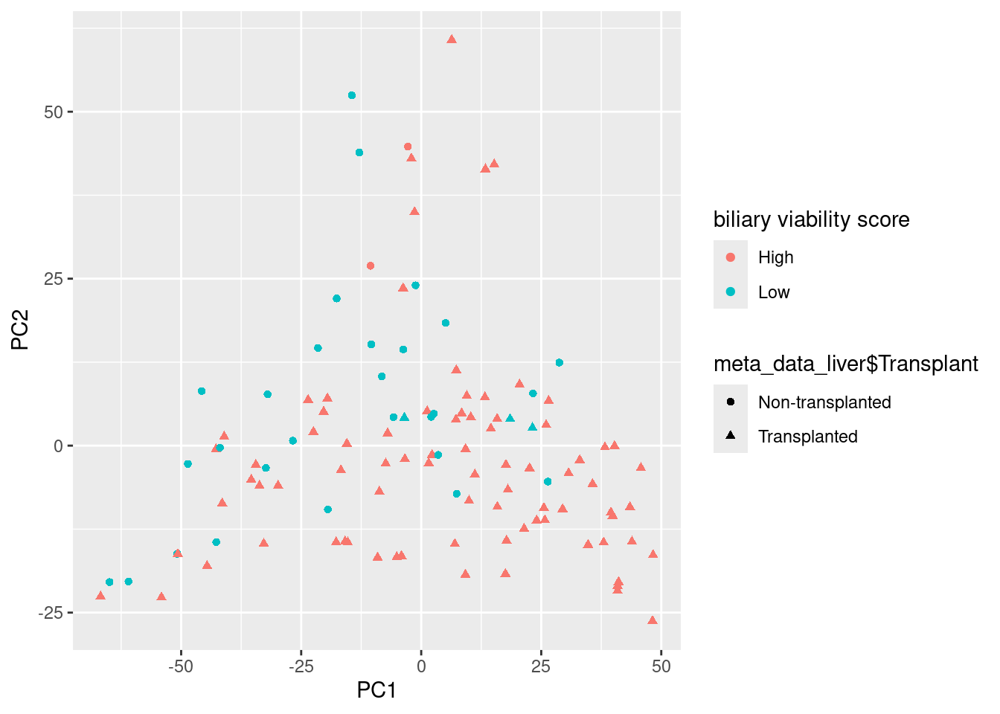
Interesting:
- We see that most of the samples with a high billiary viability score appear more on the right of PC1, where ass the lower scores appear more left.
- There appears no real clustering on the PC2 between the 2 groups.
Key Insight
This could be explained by the amount of samples or genes with NA values.
Explained variances
explained_var <- as.data.frame(eig$values / sum(eig$values)) * 100
explained_var$PC <- paste0("PC", col_n)
names(explained_var) <- c("ex_var","PC")
head(explained_var) ex_var PC
1 13.091556 PC1
2 6.894296 PC2
3 5.607589 PC3
4 4.108806 PC4
5 2.585381 PC5
6 2.226837 PC6ggplot(explained_var[1:20,],
aes(x = PC,
y = ex_var)) +
geom_col()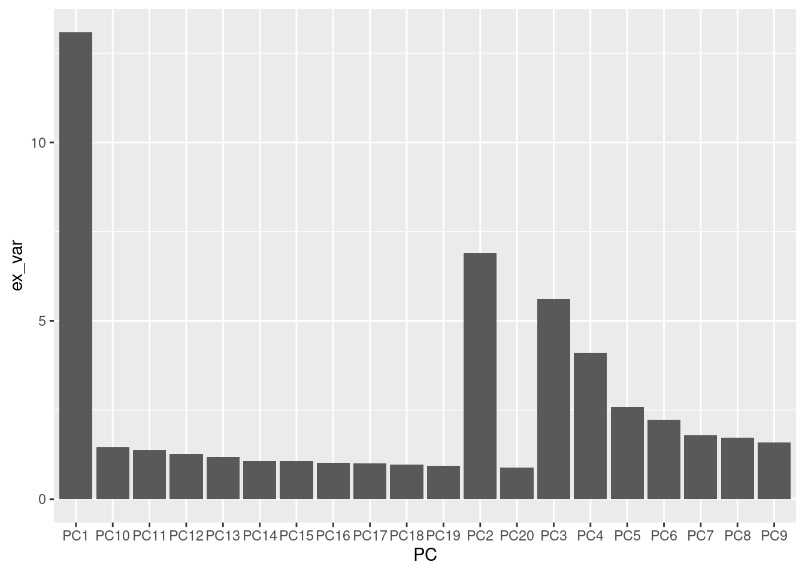
18-05-2025
PCA met mdatools
Om te vergelijken of MDA tools een ander resultaat geeft wil ik de PCA uitvoeren met deze tool en vergelijken met mijn eigen uitgevoerde PCA.
library(mdatools)model <- pca(transformed, center = T, scale = T, info ="Test PCA model")
model$ncomp[1] 20plotScores(model, )
ggplot(
model$res$cal$scores,
aes(x = `Comp 1`,
y = `Comp 2`,
color = meta_data_liver$`Biliary viability score group`,
shape = meta_data_liver$Transplant),) +
geom_point() +
labs(color = "Billiary viability score")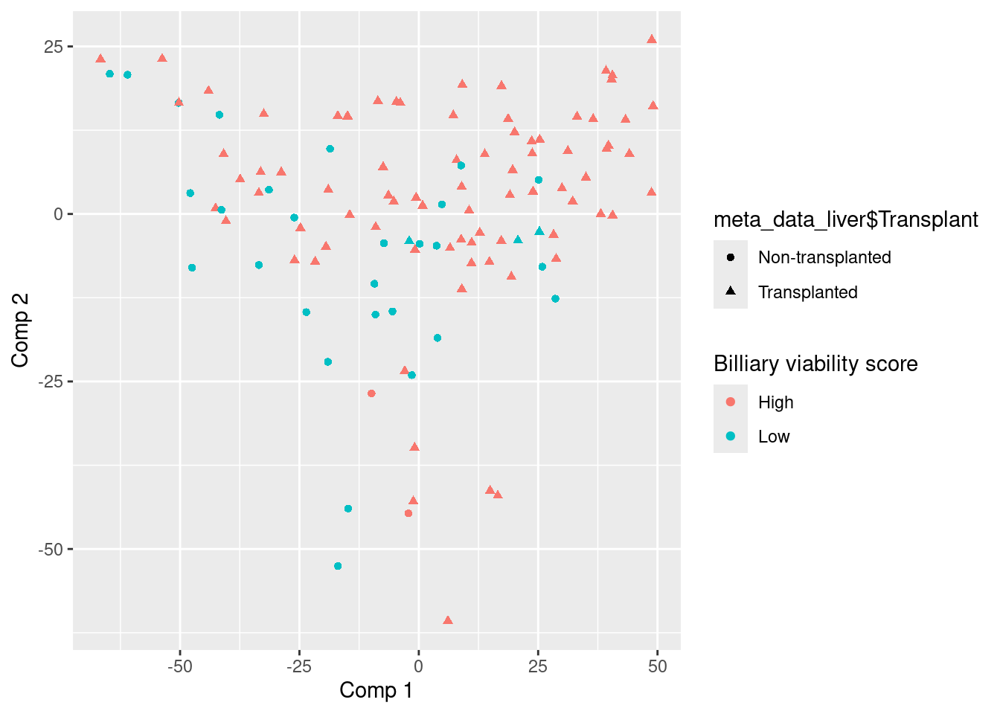
Naast dat de plot geflipped is ziet deze er hetzelfde uit als mijn eigen gegenereerde PCA plot, dit houd in dat ik deze tool kan gaan gebruiken om de data te verwerken
Echte data PCA
Voorheen was er data gebruikt waar nog geen imputatie op gebruikt was. Yamila heeft een nieuwe dataset gedeeld waarbij alle NA-waarden geimputeerd zijn. Hier zal ik opnieuw een PCA op uitvoeren.
Laden data 30 minuten
load("/students/2024-2025/Thema08/liver-transplant/proteomics/data/data_double_normalized_imputed_30min.Rdata")Omdat deze data niet meer past bij de metadata ga ik zelf high en low values uit de naam halen.
library(stringr)df_data <- as.data.frame(data_imp_30min)
bil_via <- str_extract(names(df_data), "[^_]+")
sample_names <- str_extract(names(df_data), "_(.*)") %>%
str_replace("^_", "")
head(sample_names)[1] "NMP_Bile_Proteomics_170" "NMP_Bile_Proteomics_172"
[3] "NMP_Bile_Proteomics_174" "NMP_Bile_Proteomics_186"
[5] "NMP_Bile_Proteomics_189" "NMP_Bile_Proteomics_192"meta_data_liver_filtered <- meta_data_liver %>%
dplyr::filter((Sample %in% sample_names) & (Timepoint == '30min'))
head(meta_data_liver_filtered)# A tibble: 6 × 6
Sample `Liver number` Timepoint Biliary viability sc…¹ Total BDI score grou…²
<chr> <dbl> <chr> <chr> <chr>
1 NMP_Bi… 34 30min Low High
2 NMP_Bi… 43 30min Low High
3 NMP_Bi… 38 30min High Low
4 NMP_Bi… 45 30min High High
5 NMP_Bi… 36 30min High High
6 NMP_Bi… 44 30min High Low
# ℹ abbreviated names: ¹`Biliary viability score group`,
# ²`Total BDI score group`
# ℹ 1 more variable: Transplant <chr>Nu komt de metadata overeen met de nieuwe gefilterde data. Deze kan nu gebruikt worden om kleuren te geven in plots, en zo kan er beter groepen weergegeven worden.
df_data <- df_data %>%
tibble::rownames_to_column("protein")PCA 30 minuten
model <- pca(t(data_imp_30min), center = T, scale = T)ggplot(
model$res$cal$scores,
aes(x = `Comp 1`,
y = `Comp 2`,
colour = meta_data_liver_filtered$`Biliary viability score group`),) +
geom_point(size = 2) +
scale_x_continuous(breaks = seq(-20, 70, 20)) +
scale_y_continuous(breaks = seq(-40, 30, 20)) +
coord_fixed() +
theme_minimal() +
labs(color = "Billiary viability score",
shape = "Transplanted",
x = paste("Comp 1: ", signif(model$res$cal$expvar[1], digits = 3), "%", sep = ""),
y = paste("Comp 2: ", signif(model$res$cal$expvar[2], digits = 3), "%", sep = ""))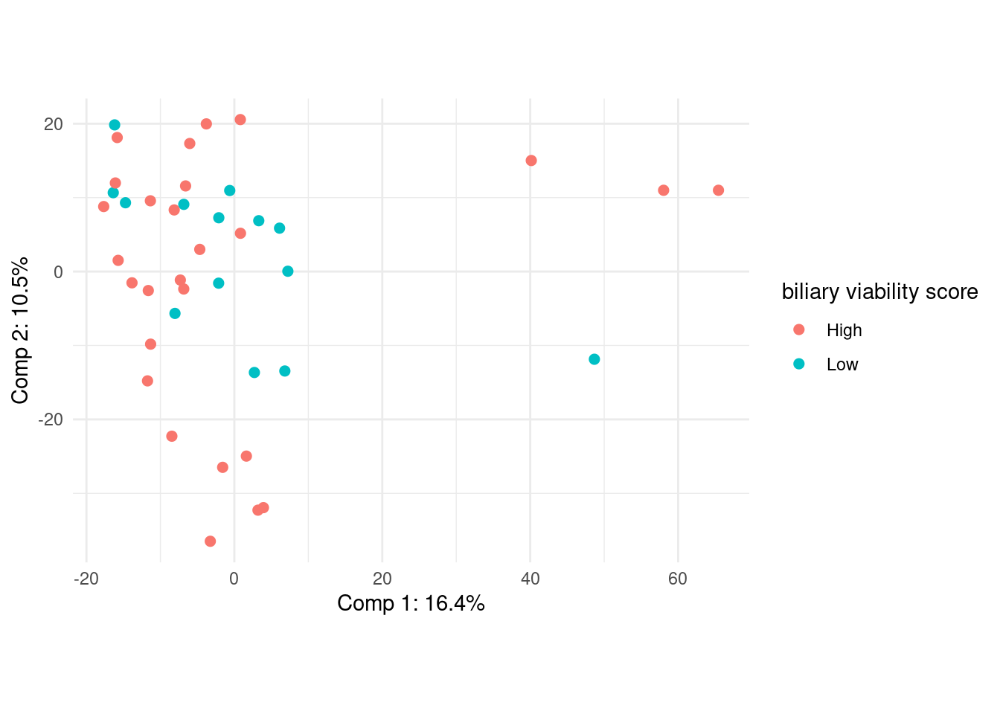
In deze plot zijn een aantal dingen zichtbaar:
- Een hogere viability houd vaak in dat de lever getransplanteerd is.
- De PCA geeft niet een duidelijke seperatie weer tussen de 2 groepen.
- Hoge viability is iets meer verspreid dan laag
- 1 lage viability ligt ver weg van alle andere punten.
- De meeste punten liggen bij elkaar rond de origin
- PLS-DA kan aangeraden worden om hier beter naar te kijken.
Imputatie kan verklaren waarom de meeste punten gewoon bij elkaar liggen. Ik wil graag noteren welke sample die blauwe is aan de rechterkant. Later tijdens de DEP analyse kunnen we die mogelijk ook bekijken.
scores_df <- as.data.frame(model$res$cal$scores)
low_bil_value <- meta_data_liver_filtered %>%
dplyr::filter(`Biliary viability score group` == "Low")
standout_low_sample <- scores_df %>%
tibble::rownames_to_column("Sample") %>%
mutate(Sample = sub("^[^_]+_", "", Sample)) %>%
dplyr::filter(Sample %in% low_bil_value$Sample) %>%
dplyr::filter(`Comp 1` == max(`Comp 1`))
standout_low_sample Sample Comp 1 Comp 2 Comp 3 Comp 4 Comp 5
1 NMP_Bile_Proteomics_212 48.67609 -11.86241 36.55303 36.28329 -29.18734
Comp 6 Comp 7 Comp 8 Comp 9 Comp 10 Comp 11 Comp 12 Comp 13
1 15.53646 6.912367 -5.962614 -1.848109 -3.886966 1.196531 3.117715 -7.687488
Comp 14 Comp 15 Comp 16 Comp 17 Comp 18 Comp 19 Comp 20
1 0.7124211 2.358686 -3.959112 2.630202 1.815072 0.8333431 2.883434Hieruit zien we dat NMP_Bile_Proteomics_212 de grote outlier is, deze kunnen we bij volgende stappen in de gaten houden.
Nu wil ik zien hoeveel van de variantie verklaard wordt door de 1e 20 prinipale componenten.
plotVariance(model)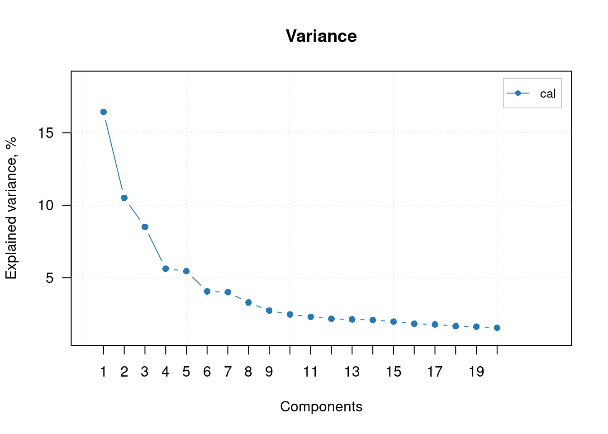
Dit geeft weer dat component 1 ongeveer 21% van de variantie verklaard PC-2 rond de 9, en vanaf PC-5 is het < 5%.
Ik wil nu de top 20 proteins weergeven van PC-1
loadings <- model$loadings
loadings$pc1 <- loadings[,2]Warning in loadings$pc1 <- loadings[, 2]: Coercing LHS to a listplot(loadings$pc1)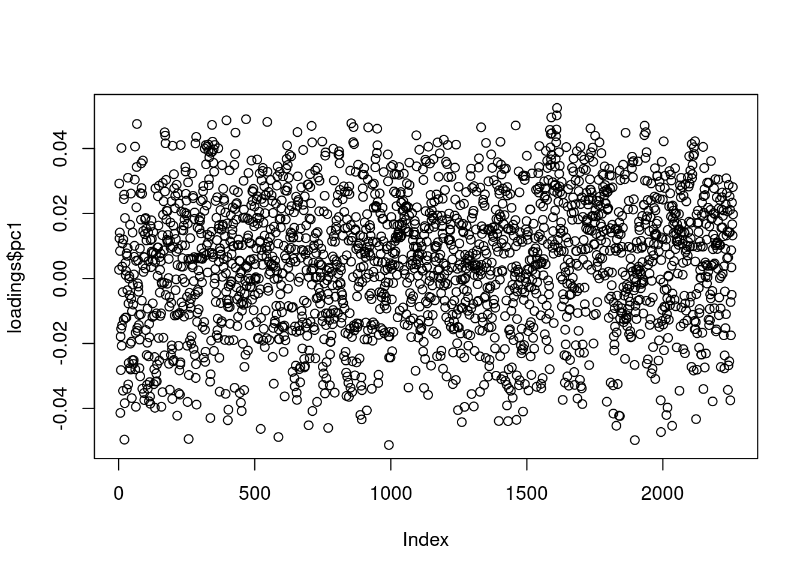
argsort <- order(loadings$pc1^2, decreasing = T)
plot(loadings$pc1[argsort])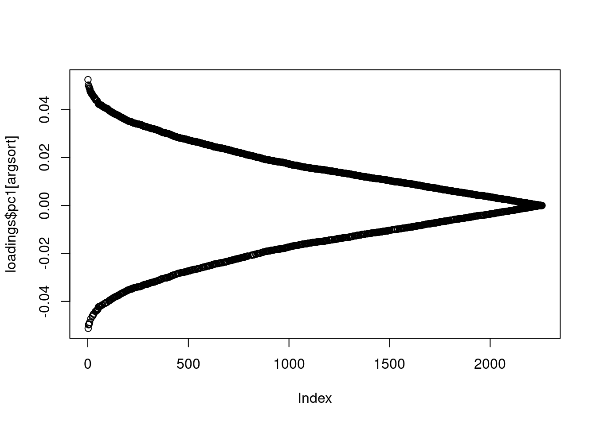
top_x_genes <- df_data[argsort, 1]
head(top_x_genes)[1] "PSMD12" "IDH1" "PSMD11" "SHMT2" "ACAA1" "PSMA6" Dit zijn de top 100 genen
save(top_x_genes, file = "/students/2024-2025/Thema08/liver-transplant/proteomics/top_x_genes/top_x_genes_30_final_pc2.Rdata")Mapping transcriptomics data
Jarno loopt tegen een probleem dat maar 35% van onze data gemapped kan worden, ik zal bepalen hoe dit kan. Eerst ga ik de kwaliteit van de fastq data bepalen. Dit ga ik doen met Falco en multiqc
ls /students/2024-2025/Thema08/liver-transplant/transcriptomics/fastq_data/ | \
parallel "/students/2024-2025/Thema05/BlaasKanker/Transcriptomics/tools/bin/falco /students/2024-2025/Thema08/liver-transplant/transcriptomics/fastq_data/{} -o /students/2024-2025/Thema08/liver-transplant/transcriptomics/falco/{}_fastqc_report"multiqc /students/2024-2025/Thema08/liver-transplant/transcriptomics/falco/* -o /students/2024-2025/Thema08/liver-transplant/transcriptomics/multiqc/19-05-2025
Mapping transcriptomics
cat /students/2024-2025/Thema05/BlaasKanker/Transcriptomics/mouse_cell_SRR.txt | \
parallel 'STAR --runThreadN 6 ' \
'--genomeDir /students/2024-2025/Thema05/BlaasKanker/Transcriptomics/tools/star/index_GRCm39/ ' \
'--readFilesIn /students/2024-2025/Thema08/liver-transplant/transcriptomics/fastq_data/ERR12161053_1.fastq.gz /students/2024-2025/Thema08/liver-transplant/transcriptomics/fastq_data/ERR12161053_2.fastq.gz ' \
'--outSAMtype BAM SortedByCoordinate ' \
'--quantMode GeneCounts ' \
'--genomeLoad LoadAndRemove' \
'--limitBAMsortRAM 2000000000 ' \
'--outFileNamePrefix /students/2024-2025/Thema08/liver-transplant/transcriptomics/STAR/test_star_'STAR --runThreadN 6 --genomeDir /students/2024-2025/Thema05/BlaasKanker/Transcriptomics/tools/star/index_GRCm39/ --readFilesIn /students/2024-2025/Thema08/liver-transplant/transcriptomics/fastq_data/ERR12161053_1.fastq /students/2024-2025/Thema08/liver-transplant/transcriptomics/fastq_data/ERR12161053_2.fastq --outSAMtype BAM SortedByCoordinate --quantMode GeneCounts --genomeLoad LoadAndRemove --limitBAMsortRAM 2000000000 --outFileNamePrefix /students/2024-2025/Thema08/liver-transplant/transcriptomics/STAR/test_star_Pca 150 minute data
load("/students/2024-2025/Thema08/liver-transplant/proteomics/data/data_double_normalized_imputed_150min.Rdata")df_data_150 <- as.data.frame(data_imp_150min)
bil_via_150 <- str_extract(names(df_data_150), "[^_]+")
sample_names_150 <- str_extract(names(df_data_150), "_(.*)") %>%
str_replace("^_", "")
sample_names_150 [1] "NMP_Bile_Proteomics_171" "NMP_Bile_Proteomics_173"
[3] "NMP_Bile_Proteomics_187" "NMP_Bile_Proteomics_196"
[5] "NMP_Bile_Proteomics_204" "NMP_Bile_Proteomics_213"
[7] "NMP_Bile_Proteomics_215" "NMP_Bile_Proteomics_225"
[9] "NMP_Bile_Proteomics_228" "NMP_Bile_Proteomics_03"
[11] "NMP_Bile_Proteomics_09" "NMP_Bile_Proteomics_14"
[13] "NMP_Bile_Proteomics_31" "NMP_Bile_Proteomics_34"
[15] "NMP_Bile_Proteomics_41" "NMP_Bile_Proteomics_43"
[17] "NMP_Bile_Proteomics_46" "NMP_Bile_Proteomics_50"
[19] "NMP_Bile_Proteomics_52" "NMP_Bile_Proteomics_55"
[21] "NMP_Bile_Proteomics_65" "NMP_Bile_Proteomics_74"
[23] "NMP_Bile_Proteomics_85" "NMP_Bile_Proteomics_91"
[25] "NMP_Bile_Proteomics_98" "NMP_Bile_Proteomics_106"
[27] "NMP_Bile_Proteomics_109"head(df_data_150) Low_NMP_Bile_Proteomics_171 Low_NMP_Bile_Proteomics_173
A1BG 16.69665 17.08015
A1CF 10.76962 11.87224
A2M 18.35066 18.49669
AARS1 14.59881 15.29601
ABAT 12.19826 12.34418
ABCB1 13.90412 14.80499
High_NMP_Bile_Proteomics_187 Low_NMP_Bile_Proteomics_196
A1BG 16.76782 18.29017
A1CF 12.01423 12.15157
A2M 20.04881 18.53164
AARS1 13.32561 13.92986
ABAT 12.98274 13.27918
ABCB1 16.61808 16.23338
High_NMP_Bile_Proteomics_204 Low_NMP_Bile_Proteomics_213
A1BG 17.381812 16.338275
A1CF 9.212311 12.311515
A2M 20.471541 15.677603
AARS1 12.422089 15.715744
ABAT 13.775970 11.979450
ABCB1 18.182000 9.276877
High_NMP_Bile_Proteomics_215 High_NMP_Bile_Proteomics_225
A1BG 17.53785 18.28389
A1CF 8.76952 9.19200
A2M 20.19677 17.96990
AARS1 14.81051 13.44139
ABAT 15.93120 11.98739
ABCB1 16.81746 14.36560
Low_NMP_Bile_Proteomics_228 Low_NMP_Bile_Proteomics_03
A1BG 18.924924 18.219481
A1CF 11.164612 9.697559
A2M 18.099181 20.605728
AARS1 15.019491 14.929061
ABAT 13.512364 13.600813
ABCB1 9.803093 12.676023
High_NMP_Bile_Proteomics_09 High_NMP_Bile_Proteomics_14
A1BG 17.198523 18.916114
A1CF 9.511503 10.337449
A2M 19.805791 17.832381
AARS1 14.711219 14.685816
ABAT 11.187451 11.091438
ABCB1 18.049129 9.476688
High_NMP_Bile_Proteomics_31 High_NMP_Bile_Proteomics_34
A1BG 19.547629 17.38255
A1CF 9.194759 12.38765
A2M 19.980427 19.14825
AARS1 14.642126 14.37087
ABAT 11.844828 11.82496
ABCB1 18.061254 15.95735
Low_NMP_Bile_Proteomics_41 Low_NMP_Bile_Proteomics_43
A1BG 20.166235 20.537743
A1CF 9.339914 14.028782
A2M 21.799649 21.645252
AARS1 14.959138 14.297502
ABAT 13.499962 9.314008
ABCB1 15.867069 15.426861
Low_NMP_Bile_Proteomics_46 Low_NMP_Bile_Proteomics_50
A1BG 18.18804 18.94932
A1CF 13.22770 12.37863
A2M 19.08134 18.78503
AARS1 16.19861 15.51299
ABAT 13.30453 11.53054
ABCB1 13.75792 15.00394
High_NMP_Bile_Proteomics_52 Low_NMP_Bile_Proteomics_55
A1BG 19.88134 17.21548
A1CF 13.64349 12.78234
A2M 21.02084 20.21438
AARS1 13.82264 14.52748
ABAT 12.93576 12.77632
ABCB1 18.25064 16.02338
High_NMP_Bile_Proteomics_65 High_NMP_Bile_Proteomics_74
A1BG 19.55232 18.92078
A1CF 13.75331 9.27861
A2M 20.88009 20.70340
AARS1 14.12808 14.33335
ABAT 11.07446 11.22118
ABCB1 15.60156 15.03746
High_NMP_Bile_Proteomics_85 High_NMP_Bile_Proteomics_91
A1BG 18.85834 17.07393
A1CF 9.25526 11.84336
A2M 20.28700 18.46476
AARS1 14.06562 15.43717
ABAT 11.81871 11.74420
ABCB1 14.13446 12.63187
High_NMP_Bile_Proteomics_98 Low_NMP_Bile_Proteomics_106
A1BG 17.83616 17.60804
A1CF 15.97387 12.32788
A2M 20.85796 21.29217
AARS1 15.22387 14.65494
ABAT 11.24676 11.72298
ABCB1 15.91915 17.33757
High_NMP_Bile_Proteomics_109
A1BG 17.37355
A1CF 9.42613
A2M 19.16622
AARS1 14.70367
ABAT 13.13661
ABCB1 15.59836meta_data_liver_filtered_150 <- meta_data_liver %>%
dplyr::filter((Sample %in% sample_names_150) & (Timepoint == '150min'))
head(meta_data_liver_filtered_150)# A tibble: 6 × 6
Sample `Liver number` Timepoint Biliary viability sc…¹ Total BDI score grou…²
<chr> <dbl> <chr> <chr> <chr>
1 NMP_Bi… 34 150min Low High
2 NMP_Bi… 43 150min Low High
3 NMP_Bi… 45 150min High High
4 NMP_Bi… 39 150min Low High
5 NMP_Bi… 32 150min High Low
6 NMP_Bi… 47 150min Low Low
# ℹ abbreviated names: ¹`Biliary viability score group`,
# ²`Total BDI score group`
# ℹ 1 more variable: Transplant <chr>Nu komt de metadata overeen met de nieuwe gefilterde data. Deze kan nu gebruikt worden om kleuren te geven in plots, en zo kan er beter groepen weergegeven worden.
df_data_150 <- df_data_150 %>%
tibble::rownames_to_column("protein")model_150 <- pca(t(df_data_150[,2:ncol(df_data_150)]), center = T, scale = T)ggplot(
model_150$res$cal$scores,
aes(x = `Comp 1`,
y = `Comp 2`,
color = meta_data_liver_filtered_150$`Biliary viability score group`,),) +
geom_point(size = 2) +
coord_fixed(ratio = 1) +
scale_x_continuous(breaks = seq(-50, 30, 20)) +
scale_y_continuous(breaks = seq(-40, 30, 20)) +
theme_minimal() +
labs(color = "Billiary viability score",
shape = "Transplanted",
x = paste("Comp 1: ", signif(model_150$res$cal$expvar[1], digits = 3), "%", sep = ""),
y = paste("Comp 2: ", signif(model_150$res$cal$expvar[2], digits = 3), "%", sep = ""))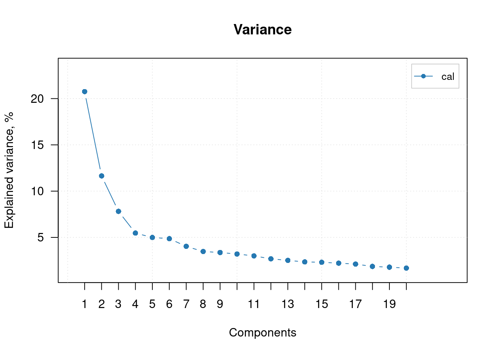
Conclusie
ggsave("../../plots/pca_150_min.png", last_plot(), bg='transparent')plotVariance(model_150)Conclusie Top 100 genes
loadings_150 <- model_150$loadings
pc1_150 <- loadings_150[,2]
argsort_150 <- order(pc1_150^2, decreasing = T)top_x_genes_150 <- df_data_150[argsort_150, 1]
head(top_x_genes_150)[1] "BRME1" "CSF2RB" "PDIA6" "CENPJ" "HPX" "KRT86" save(top_x_genes_150, file = "/students/2024-2025/Thema08/liver-transplant/proteomics/top_x_genes/top_x_genes_150_final_pc2.Rdata")20-05-2025
Mapping hisat
sbatch --partition=assemblix \
--job-name=hisat2 \
--ntasks=1 \
--cpus-per-task=8 \
--mem=300G \
--time=12:00:00 \
--wrap="ls /students/2024-2025/Thema08/liver-transplant/transcriptomics/fastq_data/*.filtered | parallel -j 8 'hisat2 -x /students/2024-2025/Thema08/liver-transplant/transcriptomics/ref_hg38/grch38_tran/genome_tran -U {} -S /students/2024-2025/Thema08/liver-transplant/transcriptomics/hisat2/{/.}.sam --phred33 --mm'"hisat2 -x /students/2024-2025/Thema08/liver-transplant/transcriptomics/ref_hg38/genome_tran -U /students/2024-2025/Thema08/liver-transplant/transcriptomics/fastq_data/ERR12161065_1.fastq.filtered -S file_name_unpaired.sam --phred33 21-05-2025
Featurecounts
count data halen uit de sam files.
featureCounts -T 5 -t exon -g gene_id -a /students/2024-2025/Thema08/liver-transplant/transcriptomics/ref_hg38/grch38_tran/Homo_sapiens.GRCh38.84.gtf -o counts.txt /students/2024-2025/Thema08/liver-transplant/transcriptomics/hisat2/*.samtranscriptomics_data <- read.table("/students/2024-2025/Thema08/liver-transplant/transcriptomics/featurecounts/counts.txt", skip = 1, header = T)
head(transcriptomics_data) Geneid Chr
1 ENSG00000223972 1;1;1;1;1;1;1;1;1
2 ENSG00000227232 1;1;1;1;1;1;1;1;1;1;1
3 ENSG00000278267 1
4 ENSG00000243485 1;1;1;1;1
5 ENSG00000274890 1
6 ENSG00000237613 1;1;1;1;1
Start
1 11869;12010;12179;12613;12613;12975;13221;13221;13453
2 14404;15005;15796;16607;16858;17233;17606;17915;18268;24738;29534
3 17369
4 29554;30267;30564;30976;30976
5 30366
6 34554;35245;35277;35721;35721
End
1 12227;12057;12227;12721;12697;13052;13374;14409;13670
2 14501;15038;15947;16765;17055;17368;17742;18061;18366;24891;29570
3 17436
4 30039;30667;30667;31097;31109
5 30503
6 35174;35481;35481;36073;36081
Strand Length
1 +;+;+;+;+;+;+;+;+ 1735
2 -;-;-;-;-;-;-;-;-;-;- 1351
3 - 68
4 +;+;+;+;+ 1021
5 + 138
6 -;-;-;-;- 1219
X.students.2024.2025.Thema08.liver.transplant.transcriptomics.hisat2.ERR12161053_2.fastq.sam
1 0
2 0
3 0
4 0
5 0
6 0
X.students.2024.2025.Thema08.liver.transplant.transcriptomics.hisat2.ERR12161054_1.fastq.sam
1 0
2 0
3 0
4 0
5 0
6 0
X.students.2024.2025.Thema08.liver.transplant.transcriptomics.hisat2.ERR12161055_1.fastq.sam
1 0
2 0
3 0
4 0
5 0
6 0
X.students.2024.2025.Thema08.liver.transplant.transcriptomics.hisat2.ERR12161056_2.fastq.sam
1 0
2 0
3 0
4 0
5 0
6 0
X.students.2024.2025.Thema08.liver.transplant.transcriptomics.hisat2.ERR12161057_2.fastq.sam
1 0
2 0
3 0
4 0
5 0
6 0
X.students.2024.2025.Thema08.liver.transplant.transcriptomics.hisat2.ERR12161058_2.fastq.sam
1 0
2 0
3 0
4 0
5 0
6 0
X.students.2024.2025.Thema08.liver.transplant.transcriptomics.hisat2.ERR12161059_1.fastq.sam
1 0
2 0
3 0
4 0
5 0
6 0
X.students.2024.2025.Thema08.liver.transplant.transcriptomics.hisat2.ERR12161060_1.fastq.sam
1 0
2 0
3 0
4 0
5 0
6 0
X.students.2024.2025.Thema08.liver.transplant.transcriptomics.hisat2.ERR12161061_1.fastq.sam
1 0
2 0
3 0
4 0
5 0
6 0
X.students.2024.2025.Thema08.liver.transplant.transcriptomics.hisat2.ERR12161062_2.fastq.sam
1 0
2 0
3 0
4 0
5 0
6 0
X.students.2024.2025.Thema08.liver.transplant.transcriptomics.hisat2.ERR12161063_2.fastq.sam
1 0
2 0
3 0
4 0
5 0
6 0
X.students.2024.2025.Thema08.liver.transplant.transcriptomics.hisat2.ERR12161064_2.fastq.sam
1 0
2 0
3 0
4 0
5 0
6 0
X.students.2024.2025.Thema08.liver.transplant.transcriptomics.hisat2.ERR12161065_1.fastq.sam
1 0
2 0
3 0
4 0
5 0
6 0
X.students.2024.2025.Thema08.liver.transplant.transcriptomics.hisat2.ERR12161066_2.fastq.sam
1 0
2 0
3 0
4 0
5 0
6 0
X.students.2024.2025.Thema08.liver.transplant.transcriptomics.hisat2.ERR12161067_1.fastq.sam
1 0
2 0
3 0
4 0
5 0
6 0
X.students.2024.2025.Thema08.liver.transplant.transcriptomics.hisat2.ERR12161068_1.fastq.sam
1 0
2 0
3 0
4 0
5 0
6 0
X.students.2024.2025.Thema08.liver.transplant.transcriptomics.hisat2.ERR12161069_1.fastq.sam
1 0
2 0
3 0
4 0
5 0
6 0
X.students.2024.2025.Thema08.liver.transplant.transcriptomics.hisat2.ERR12161070_1.fastq.sam
1 0
2 0
3 0
4 0
5 0
6 0
X.students.2024.2025.Thema08.liver.transplant.transcriptomics.hisat2.ERR12161071_1.fastq.sam
1 0
2 0
3 0
4 0
5 0
6 0
X.students.2024.2025.Thema08.liver.transplant.transcriptomics.hisat2.ERR12161072_2.fastq.sam
1 0
2 0
3 0
4 0
5 0
6 0
X.students.2024.2025.Thema08.liver.transplant.transcriptomics.hisat2.ERR12161073_1.fastq.sam
1 0
2 0
3 0
4 0
5 0
6 0
X.students.2024.2025.Thema08.liver.transplant.transcriptomics.hisat2.ERR12161074_1.fastq.sam
1 0
2 0
3 0
4 0
5 0
6 0
X.students.2024.2025.Thema08.liver.transplant.transcriptomics.hisat2.ERR12161075_2.fastq.sam
1 0
2 0
3 0
4 0
5 0
6 0
X.students.2024.2025.Thema08.liver.transplant.transcriptomics.hisat2.ERR12161076_1.fastq.sam
1 0
2 0
3 0
4 0
5 0
6 0
X.students.2024.2025.Thema08.liver.transplant.transcriptomics.hisat2.ERR12161077_2.fastq.sam
1 0
2 0
3 0
4 0
5 0
6 0
X.students.2024.2025.Thema08.liver.transplant.transcriptomics.hisat2.ERR12161078_2.fastq.sam
1 0
2 0
3 0
4 0
5 0
6 0
X.students.2024.2025.Thema08.liver.transplant.transcriptomics.hisat2.ERR12161079_2.fastq.sam
1 0
2 0
3 0
4 0
5 0
6 0
X.students.2024.2025.Thema08.liver.transplant.transcriptomics.hisat2.ERR12161080_1.fastq.sam
1 0
2 0
3 0
4 0
5 0
6 0
X.students.2024.2025.Thema08.liver.transplant.transcriptomics.hisat2.ERR12161081_1.fastq.sam
1 0
2 0
3 0
4 0
5 0
6 0
X.students.2024.2025.Thema08.liver.transplant.transcriptomics.hisat2.ERR12161082_2.fastq.sam
1 0
2 0
3 0
4 0
5 0
6 0
X.students.2024.2025.Thema08.liver.transplant.transcriptomics.hisat2.ERR12161083_2.fastq.sam
1 0
2 0
3 0
4 0
5 0
6 0
X.students.2024.2025.Thema08.liver.transplant.transcriptomics.hisat2.ERR12161084_2.fastq.sam
1 0
2 0
3 0
4 0
5 0
6 0
X.students.2024.2025.Thema08.liver.transplant.transcriptomics.hisat2.ERR12161085_2.fastq.sam
1 0
2 0
3 0
4 0
5 0
6 0
X.students.2024.2025.Thema08.liver.transplant.transcriptomics.hisat2.ERR12161086_2.fastq.sam
1 0
2 0
3 0
4 0
5 0
6 0
X.students.2024.2025.Thema08.liver.transplant.transcriptomics.hisat2.ERR12161087_2.fastq.sam
1 0
2 0
3 0
4 0
5 0
6 0head(meta_data_liver)# A tibble: 6 × 6
Sample `Liver number` Timepoint Biliary viability sc…¹ Total BDI score grou…²
<chr> <dbl> <chr> <chr> <chr>
1 NMP_Bi… 34 30min Low High
2 NMP_Bi… 43 30min Low High
3 NMP_Bi… 38 30min High Low
4 NMP_Bi… 33 30min High High
5 NMP_Bi… 45 30min High High
6 NMP_Bi… 36 30min High High
# ℹ abbreviated names: ¹`Biliary viability score group`,
# ²`Total BDI score group`
# ℹ 1 more variable: Transplant <chr>transcriptomics_metadata <- read.table("/students/2024-2025/Thema08/liver-transplant/data/E-MTAB-13501.sdrf.txt", header = T, sep = "\t")
head(transcriptomics_metadata) Source.Name Comment.ENA_SAMPLE. Comment.BioSD_SAMPLE.
1 R10 ERS16523058 SAMEA114541729
2 R10 ERS16523058 SAMEA114541729
3 R100 ERS16523059 SAMEA114541730
4 R100 ERS16523059 SAMEA114541730
5 R102 ERS16523060 SAMEA114541731
6 R102 ERS16523060 SAMEA114541731
Characteristics.organism. Characteristics.individual. Characteristics.age.
1 Homo sapiens 5 67
2 Homo sapiens 5 67
3 Homo sapiens 50 63
4 Homo sapiens 50 63
5 Homo sapiens 52 60
6 Homo sapiens 52 60
Unit.time.unit. Term.Source.REF Term.Accession.Number
1 year EFO UO_0000036
2 year EFO UO_0000036
3 year EFO UO_0000036
4 year EFO UO_0000036
5 year EFO UO_0000036
6 year EFO UO_0000036
Characteristics.developmental.stage. Characteristics.sex.
1 adult female
2 adult female
3 adult male
4 adult male
5 adult male
6 adult male
Characteristics.organism.part. Characteristics.total.bdi.score.group.
1 liver
2 liver
3 liver high
4 liver high
5 liver low
6 liver low
Characteristics.biliary.viability.score.group.
1 low
2 low
3 high
4 high
5 low
6 low
Characteristics.transplant.suitability. Material.Type Protocol.REF
1 non-transplanted organism part P-MTAB-137699
2 non-transplanted organism part P-MTAB-137699
3 transplanted organism part P-MTAB-137699
4 transplanted organism part P-MTAB-137699
5 non-transplanted organism part P-MTAB-137699
6 non-transplanted organism part P-MTAB-137699
Protocol.REF.1 Protocol.REF.2 Extract.Name Material.Type.1
1 P-MTAB-137700 P-MTAB-137701 R10 RNA
2 P-MTAB-137700 P-MTAB-137701 R10 RNA
3 P-MTAB-137700 P-MTAB-137701 R100 RNA
4 P-MTAB-137700 P-MTAB-137701 R100 RNA
5 P-MTAB-137700 P-MTAB-137701 R102 RNA
6 P-MTAB-137700 P-MTAB-137701 R102 RNA
Comment.LIBRARY_LAYOUT. Comment.LIBRARY_SELECTION. Comment.LIBRARY_SOURCE.
1 PAIRED Oligo-dT TRANSCRIPTOMIC
2 PAIRED Oligo-dT TRANSCRIPTOMIC
3 PAIRED Oligo-dT TRANSCRIPTOMIC
4 PAIRED Oligo-dT TRANSCRIPTOMIC
5 PAIRED Oligo-dT TRANSCRIPTOMIC
6 PAIRED Oligo-dT TRANSCRIPTOMIC
Comment.LIBRARY_STRAND. Comment.LIBRARY_STRATEGY. Protocol.REF.3
1 first strand RNA-Seq P-MTAB-137702
2 first strand RNA-Seq P-MTAB-137702
3 first strand RNA-Seq P-MTAB-137702
4 first strand RNA-Seq P-MTAB-137702
5 first strand RNA-Seq P-MTAB-137702
6 first strand RNA-Seq P-MTAB-137702
Performer Assay.Name Technology.Type Comment.ENA_EXPERIMENT.
1 ERIBA Sequencing Facility R10 sequencing assay ERX11571999
2 ERIBA Sequencing Facility R10 sequencing assay ERX11571999
3 ERIBA Sequencing Facility R100 sequencing assay ERX11572000
4 ERIBA Sequencing Facility R100 sequencing assay ERX11572000
5 ERIBA Sequencing Facility R102 sequencing assay ERX11572001
6 ERIBA Sequencing Facility R102 sequencing assay ERX11572001
Scan.Name Comment.SUBMITTED_FILE_NAME. Comment.ENA_RUN.
1 R10_2.fastq.gz R10_2.fastq.gz ERR12161053
2 R10_1.fastq.gz R10_1.fastq.gz ERR12161053
3 R100_2.fastq.gz R100_2.fastq.gz ERR12161054
4 R100_1.fastq.gz R100_1.fastq.gz ERR12161054
5 R102_2.fastq.gz R102_2.fastq.gz ERR12161055
6 R102_1.fastq.gz R102_1.fastq.gz ERR12161055
Comment.FASTQ_URI.
1 ftp://ftp.sra.ebi.ac.uk/vol1/fastq/ERR121/053/ERR12161053/ERR12161053_1.fastq.gz
2 ftp://ftp.sra.ebi.ac.uk/vol1/fastq/ERR121/053/ERR12161053/ERR12161053_2.fastq.gz
3 ftp://ftp.sra.ebi.ac.uk/vol1/fastq/ERR121/054/ERR12161054/ERR12161054_1.fastq.gz
4 ftp://ftp.sra.ebi.ac.uk/vol1/fastq/ERR121/054/ERR12161054/ERR12161054_2.fastq.gz
5 ftp://ftp.sra.ebi.ac.uk/vol1/fastq/ERR121/055/ERR12161055/ERR12161055_1.fastq.gz
6 ftp://ftp.sra.ebi.ac.uk/vol1/fastq/ERR121/055/ERR12161055/ERR12161055_2.fastq.gz
Factor.Value.total.bdi.score.group.
1
2
3 high
4 high
5 low
6 low
Factor.Value.biliary.viability.score.group.
1 low
2 low
3 high
4 high
5 low
6 low
Factor.Value.transplant.suitability.
1 non-transplanted
2 non-transplanted
3 transplanted
4 transplanted
5 non-transplanted
6 non-transplantedAdding gene symbol to dataframe
library(AnnotationDbi)Loading required package: stats4Loading required package: BiocGenerics
Attaching package: 'BiocGenerics'The following objects are masked from 'package:lubridate':
intersect, setdiff, unionThe following objects are masked from 'package:dplyr':
combine, intersect, setdiff, unionThe following objects are masked from 'package:stats':
IQR, mad, sd, var, xtabsThe following objects are masked from 'package:base':
Filter, Find, Map, Position, Reduce, anyDuplicated, aperm, append,
as.data.frame, basename, cbind, colnames, dirname, do.call,
duplicated, eval, evalq, get, grep, grepl, intersect, is.unsorted,
lapply, mapply, match, mget, order, paste, pmax, pmax.int, pmin,
pmin.int, rank, rbind, rownames, sapply, setdiff, sort, table,
tapply, union, unique, unsplit, which.max, which.minLoading required package: BiobaseWelcome to Bioconductor
Vignettes contain introductory material; view with
'browseVignettes()'. To cite Bioconductor, see
'citation("Biobase")', and for packages 'citation("pkgname")'.Loading required package: IRangesLoading required package: S4Vectors
Attaching package: 'S4Vectors'The following objects are masked from 'package:lubridate':
second, second<-The following objects are masked from 'package:dplyr':
first, renameThe following object is masked from 'package:tidyr':
expandThe following objects are masked from 'package:base':
I, expand.grid, unname
Attaching package: 'IRanges'The following object is masked from 'package:lubridate':
%within%The following objects are masked from 'package:dplyr':
collapse, desc, sliceThe following object is masked from 'package:purrr':
reduce
Attaching package: 'AnnotationDbi'The following object is masked from 'package:dplyr':
selectlibrary(org.Hs.eg.db)genes <- transcriptomics_data$Geneid
ann <- select(org.Hs.eg.db, keys = genes, keytype = 'ENSEMBL', columns = 'SYMBOL')'select()' returned 1:many mapping between keys and columnstranscriptomics_data <- merge(transcriptomics_data, ann, by.x = "Geneid", by.y = "ENSEMBL", all.x = TRUE)
transcriptomics_data <- transcriptomics_data %>%
dplyr::select(c(Geneid, SYMBOL), everything())
head(transcriptomics_data) Geneid SYMBOL
1 ENSG00000000003 TSPAN6
2 ENSG00000000005 TNMD
3 ENSG00000000419 DPM1
4 ENSG00000000457 SCYL3
5 ENSG00000000460 C1orf112
6 ENSG00000000938 FGR
Chr
1 X;X;X;X;X;X;X;X;X;X;X;X;X;X;X;X;X;X;X;X;X;X;X;X;X;X;X;X;X;X;X;X;X;X
2 X;X;X;X;X;X;X;X;X;X
3 20;20;20;20;20;20;20;20;20;20;20;20;20;20;20;20;20;20;20;20;20;20;20;20;20;20;20;20;20;20;20;20;20;20;20;20;20;20;20;20;20;20;20;20;20;20;20;20;20;20;20;20;20
4 1;1;1;1;1;1;1;1;1;1;1;1;1;1;1;1;1;1;1;1;1;1;1;1;1;1;1;1;1;1;1;1;1;1;1;1;1;1;1;1;1;1;1;1;1;1;1;1;1;1;1;1;1;1;1;1;1;1;1;1;1;1;1
5 1;1;1;1;1;1;1;1;1;1;1;1;1;1;1;1;1;1;1;1;1;1;1;1;1;1;1;1;1;1;1;1;1;1;1;1;1;1;1;1;1;1;1;1;1;1;1;1;1;1;1;1;1;1;1;1;1;1;1;1;1;1;1;1;1;1;1;1;1;1;1;1;1;1;1;1;1;1;1;1;1;1;1;1;1;1;1;1;1;1;1;1;1;1;1;1;1;1;1;1;1;1;1;1;1;1;1;1;1;1;1;1;1;1;1;1;1;1;1;1;1;1;1;1;1;1;1;1;1;1;1;1;1;1;1;1;1;1;1;1;1;1;1;1;1;1;1;1;1;1;1
6 1;1;1;1;1;1;1;1;1;1;1;1;1;1;1;1;1;1;1;1;1;1;1;1;1;1;1;1;1;1;1;1;1;1;1;1;1;1;1;1;1;1;1;1;1;1;1;1;1;1;1;1;1;1;1;1;1;1;1;1;1;1;1;1;1
Start
1 100627109;100628670;100630759;100630759;100632063;100632485;100632485;100632541;100633405;100633405;100633405;100633405;100633442;100633931;100633931;100633931;100633931;100633931;100635178;100635178;100635178;100635178;100635178;100635558;100635558;100635558;100635558;100635558;100636191;100636608;100636793;100636793;100636793;100639945
2 100584802;100585231;100593624;100593895;100594261;100594261;100597504;100597504;100599016;100599508
3 50934867;50934867;50934867;50934896;50934945;50936148;50936148;50936148;50936148;50936148;50936148;50940865;50940865;50940865;50940865;50940865;50940865;50941105;50941105;50941129;50941129;50942031;50942031;50942031;50942031;50942031;50945737;50945737;50945737;50945737;50945737;50945737;50945847;50945847;50945847;50945847;50945847;50945847;50948629;50948629;50948629;50948629;50948629;50955186;50955186;50955186;50955186;50955186;50958363;50958363;50958363;50958363;50958363
4 169849631;169853074;169853074;169854270;169854270;169854270;169854511;169855796;169855796;169859041;169859041;169859041;169859041;169859119;169862613;169862613;169862613;169862613;169862613;169864369;169864369;169864369;169864369;169864369;169866896;169866896;169866896;169866896;169866896;169868928;169868928;169868928;169868928;169868928;169870255;169870255;169870255;169870255;169870255;169873696;169873696;169873696;169873696;169873696;169875978;169875978;169875978;169875978;169875978;169878634;169878634;169878634;169878634;169878634;169888676;169888676;169888676;169888676;169888676;169893788;169893788;169893788;169894007
5 169662007;169683469;169683756;169783811;169784877;169794730;169795043;169795043;169795049;169795079;169795079;169795409;169795829;169795921;169798857;169798857;169798857;169798857;169798857;169798919;169798919;169798919;169798919;169800883;169800883;169800883;169800883;169800883;169800883;169802621;169802621;169802621;169802621;169802621;169802621;169802621;169802621;169802621;169803169;169803169;169803169;169803169;169803169;169803169;169803169;169803169;169803169;169804075;169804075;169804075;169804075;169804075;169804112;169804112;169804112;169804112;169806004;169806004;169806004;169806004;169806004;169806004;169806004;169807791;169807791;169807791;169807791;169807791;169807791;169821679;169821679;169821679;169821679;169821679;169821679;169823408;169823408;169823408;169823408;169823408;169827051;169827051;169827051;169827051;169827051;169827711;169827711;169827711;169827711;169827711;169829263;169829263;169829263;169829263;169829263;169830259;169830259;169830259;169830259;169830259;169830696;169830696;169830696;169830696;169830696;169832417;169832417;169832417;169832417;169832417;169836927;169836927;169836927;169836927;169836927;169842417;169842417;169842417;169842417;169842417;169843674;169843674;169843674;169843674;169843674;169847690;169847690;169847690;169847690;169847690;169849500;169849500;169849500;169849500;169849500;169850265;169850265;169850265;169850265;169850265;169850454;169851817;169851817;169851817;169851817;169851817;169852790;169852790;169852790;169852790;169852790
6 27612064;27612292;27612300;27612669;27613219;27613219;27613219;27613219;27614430;27614430;27614430;27614430;27614850;27614850;27614850;27614850;27615434;27615434;27615434;27615434;27615514;27615689;27615689;27615689;27615689;27615689;27616857;27616857;27616857;27616857;27616857;27617193;27617193;27617193;27617193;27617193;27621559;27621559;27621559;27621559;27621559;27623042;27623042;27623042;27623042;27623042;27623384;27623407;27623691;27623691;27623691;27623691;27623691;27625089;27625089;27625089;27625089;27625089;27625089;27626046;27626046;27626046;27626460;27635065;27635065
End
1 100629986;100629986;100630866;100630866;100632068;100632568;100632568;100632568;100633539;100633539;100633539;100633539;100633539;100634029;100634029;100634029;100634029;100634029;100635252;100635252;100635252;100635252;100635252;100635746;100635746;100635746;100635746;100635746;100636689;100636806;100637104;100637104;100637104;100639991
2 100585066;100585362;100594035;100594035;100594362;100594362;100597531;100597657;100599182;100599885
3 50935236;50935236;50935236;50935236;50935236;50936262;50936262;50936262;50936262;50936262;50936262;50940933;50940933;50940955;50940933;50940955;50940933;50941209;50941209;50941209;50941209;50942126;50942126;50942126;50942126;50942126;50945762;50945762;50945762;50945762;50945762;50945762;50945923;50945923;50945861;50945923;50945923;50945923;50948662;50948662;50948662;50948662;50948662;50955285;50955285;50955285;50955285;50955285;50958532;50958521;50958555;50958550;50958550
4 169853772;169853772;169853772;169854964;169854964;169854964;169854964;169855957;169855957;169859212;169859212;169859212;169859212;169859212;169862797;169862797;169862797;169862797;169862797;169864508;169864508;169864508;169864508;169864508;169866973;169866973;169866973;169866973;169866973;169869128;169869039;169869039;169869039;169869039;169870357;169870357;169870357;169870357;169870357;169873752;169873752;169873752;169873752;169873752;169876091;169876091;169876091;169876091;169876091;169878819;169878819;169878819;169878819;169878819;169888890;169888890;169888890;169888888;169888890;169893952;169893959;169893952;169894267
5 169662523;169683625;169683932;169783928;169784913;169794905;169795213;169795213;169795115;169795213;169795213;169795983;169795983;169795983;169798958;169798958;169798958;169798958;169798958;169798958;169798958;169798958;169798958;169800971;169800971;169800971;169800971;169800971;169800971;169802725;169802725;169802725;169802725;169802725;169802725;169802725;169802725;169802725;169803309;169803309;169803309;169803309;169803309;169803309;169803309;169803309;169803309;169804240;169804240;169804240;169804240;169804386;169804240;169804240;169804347;169804240;169806088;169806088;169806088;169806088;169806088;169806088;169806088;169807929;169807929;169807929;169807929;169807837;169807929;169821759;169821759;169821759;169821719;169821759;169821759;169823472;169823472;169823472;169823472;169823472;169827199;169827199;169827199;169827199;169827199;169827840;169827840;169827840;169827840;169827840;169829449;169829449;169829449;169829449;169829449;169830341;169830341;169830341;169830341;169830341;169830747;169830747;169830747;169830747;169830747;169832506;169832506;169832506;169832506;169832506;169837112;169837112;169837112;169837112;169837112;169842539;169842539;169842539;169842539;169842539;169843769;169843769;169843769;169843769;169843769;169847803;169847803;169847803;169847803;169847803;169849604;169849604;169849604;169849604;169849604;169850345;169850345;169850345;169850345;169850327;169850566;169851936;169851936;169851936;169851936;169851936;169853037;169854080;169854080;169854080;169853085
6 27613122;27613122;27613122;27613122;27613350;27613350;27613350;27613350;27614583;27614583;27614583;27614583;27614926;27614926;27614926;27614926;27615613;27615613;27615613;27615613;27615613;27615844;27615844;27615844;27615844;27615844;27617006;27617006;27617006;27617006;27617006;27617296;27617296;27617296;27617296;27617296;27621657;27621657;27621657;27621657;27621657;27623144;27623144;27623144;27623144;27623144;27623929;27623929;27623929;27623929;27624062;27623929;27623929;27625151;27625151;27625151;27625151;27625151;27625151;27626240;27626135;27626240;27626569;27635134;27635277
Strand
1 -;-;-;-;-;-;-;-;-;-;-;-;-;-;-;-;-;-;-;-;-;-;-;-;-;-;-;-;-;-;-;-;-;-
2 +;+;+;+;+;+;+;+;+;+
3 -;-;-;-;-;-;-;-;-;-;-;-;-;-;-;-;-;-;-;-;-;-;-;-;-;-;-;-;-;-;-;-;-;-;-;-;-;-;-;-;-;-;-;-;-;-;-;-;-;-;-;-;-
4 -;-;-;-;-;-;-;-;-;-;-;-;-;-;-;-;-;-;-;-;-;-;-;-;-;-;-;-;-;-;-;-;-;-;-;-;-;-;-;-;-;-;-;-;-;-;-;-;-;-;-;-;-;-;-;-;-;-;-;-;-;-;-
5 +;+;+;+;+;+;+;+;+;+;+;+;+;+;+;+;+;+;+;+;+;+;+;+;+;+;+;+;+;+;+;+;+;+;+;+;+;+;+;+;+;+;+;+;+;+;+;+;+;+;+;+;+;+;+;+;+;+;+;+;+;+;+;+;+;+;+;+;+;+;+;+;+;+;+;+;+;+;+;+;+;+;+;+;+;+;+;+;+;+;+;+;+;+;+;+;+;+;+;+;+;+;+;+;+;+;+;+;+;+;+;+;+;+;+;+;+;+;+;+;+;+;+;+;+;+;+;+;+;+;+;+;+;+;+;+;+;+;+;+;+;+;+;+;+;+;+;+;+;+;+
6 -;-;-;-;-;-;-;-;-;-;-;-;-;-;-;-;-;-;-;-;-;-;-;-;-;-;-;-;-;-;-;-;-;-;-;-;-;-;-;-;-;-;-;-;-;-;-;-;-;-;-;-;-;-;-;-;-;-;-;-;-;-;-;-;-
Length
1 4535
2 1610
3 1207
4 6883
5 5967
6 3474
X.students.2024.2025.Thema08.liver.transplant.transcriptomics.hisat2.ERR12161053_2.fastq.sam
1 224
2 0
3 113
4 12
5 0
6 4
X.students.2024.2025.Thema08.liver.transplant.transcriptomics.hisat2.ERR12161054_1.fastq.sam
1 105
2 0
3 37
4 9
5 2
6 4
X.students.2024.2025.Thema08.liver.transplant.transcriptomics.hisat2.ERR12161055_1.fastq.sam
1 206
2 0
3 155
4 22
5 0
6 6
X.students.2024.2025.Thema08.liver.transplant.transcriptomics.hisat2.ERR12161056_2.fastq.sam
1 312
2 0
3 70
4 15
5 1
6 9
X.students.2024.2025.Thema08.liver.transplant.transcriptomics.hisat2.ERR12161057_2.fastq.sam
1 280
2 0
3 67
4 11
5 0
6 2
X.students.2024.2025.Thema08.liver.transplant.transcriptomics.hisat2.ERR12161058_2.fastq.sam
1 171
2 0
3 78
4 22
5 1
6 7
X.students.2024.2025.Thema08.liver.transplant.transcriptomics.hisat2.ERR12161059_1.fastq.sam
1 219
2 0
3 96
4 19
5 1
6 8
X.students.2024.2025.Thema08.liver.transplant.transcriptomics.hisat2.ERR12161060_1.fastq.sam
1 66
2 0
3 35
4 3
5 0
6 2
X.students.2024.2025.Thema08.liver.transplant.transcriptomics.hisat2.ERR12161061_1.fastq.sam
1 237
2 0
3 80
4 31
5 1
6 4
X.students.2024.2025.Thema08.liver.transplant.transcriptomics.hisat2.ERR12161062_2.fastq.sam
1 228
2 0
3 53
4 16
5 8
6 6
X.students.2024.2025.Thema08.liver.transplant.transcriptomics.hisat2.ERR12161063_2.fastq.sam
1 185
2 0
3 82
4 15
5 5
6 22
X.students.2024.2025.Thema08.liver.transplant.transcriptomics.hisat2.ERR12161064_2.fastq.sam
1 314
2 3
3 88
4 24
5 5
6 8
X.students.2024.2025.Thema08.liver.transplant.transcriptomics.hisat2.ERR12161065_1.fastq.sam
1 270
2 0
3 61
4 21
5 0
6 37
X.students.2024.2025.Thema08.liver.transplant.transcriptomics.hisat2.ERR12161066_2.fastq.sam
1 335
2 0
3 96
4 21
5 0
6 11
X.students.2024.2025.Thema08.liver.transplant.transcriptomics.hisat2.ERR12161067_1.fastq.sam
1 203
2 0
3 77
4 10
5 0
6 5
X.students.2024.2025.Thema08.liver.transplant.transcriptomics.hisat2.ERR12161068_1.fastq.sam
1 125
2 0
3 52
4 16
5 4
6 6
X.students.2024.2025.Thema08.liver.transplant.transcriptomics.hisat2.ERR12161069_1.fastq.sam
1 311
2 0
3 64
4 19
5 6
6 9
X.students.2024.2025.Thema08.liver.transplant.transcriptomics.hisat2.ERR12161070_1.fastq.sam
1 118
2 0
3 84
4 19
5 0
6 19
X.students.2024.2025.Thema08.liver.transplant.transcriptomics.hisat2.ERR12161071_1.fastq.sam
1 236
2 0
3 60
4 14
5 4
6 4
X.students.2024.2025.Thema08.liver.transplant.transcriptomics.hisat2.ERR12161072_2.fastq.sam
1 171
2 0
3 94
4 8
5 0
6 3
X.students.2024.2025.Thema08.liver.transplant.transcriptomics.hisat2.ERR12161073_1.fastq.sam
1 281
2 0
3 97
4 14
5 5
6 8
X.students.2024.2025.Thema08.liver.transplant.transcriptomics.hisat2.ERR12161074_1.fastq.sam
1 290
2 0
3 100
4 7
5 4
6 3
X.students.2024.2025.Thema08.liver.transplant.transcriptomics.hisat2.ERR12161075_2.fastq.sam
1 186
2 0
3 50
4 15
5 2
6 6
X.students.2024.2025.Thema08.liver.transplant.transcriptomics.hisat2.ERR12161076_1.fastq.sam
1 212
2 0
3 46
4 15
5 5
6 4
X.students.2024.2025.Thema08.liver.transplant.transcriptomics.hisat2.ERR12161077_2.fastq.sam
1 313
2 0
3 71
4 5
5 2
6 5
X.students.2024.2025.Thema08.liver.transplant.transcriptomics.hisat2.ERR12161078_2.fastq.sam
1 291
2 0
3 120
4 25
5 3
6 7
X.students.2024.2025.Thema08.liver.transplant.transcriptomics.hisat2.ERR12161079_2.fastq.sam
1 221
2 0
3 118
4 16
5 1
6 23
X.students.2024.2025.Thema08.liver.transplant.transcriptomics.hisat2.ERR12161080_1.fastq.sam
1 316
2 0
3 93
4 28
5 1
6 9
X.students.2024.2025.Thema08.liver.transplant.transcriptomics.hisat2.ERR12161081_1.fastq.sam
1 346
2 0
3 110
4 37
5 0
6 49
X.students.2024.2025.Thema08.liver.transplant.transcriptomics.hisat2.ERR12161082_2.fastq.sam
1 296
2 0
3 96
4 28
5 0
6 15
X.students.2024.2025.Thema08.liver.transplant.transcriptomics.hisat2.ERR12161083_2.fastq.sam
1 245
2 0
3 89
4 34
5 1
6 15
X.students.2024.2025.Thema08.liver.transplant.transcriptomics.hisat2.ERR12161084_2.fastq.sam
1 200
2 0
3 60
4 14
5 0
6 7
X.students.2024.2025.Thema08.liver.transplant.transcriptomics.hisat2.ERR12161085_2.fastq.sam
1 229
2 0
3 68
4 10
5 1
6 27
X.students.2024.2025.Thema08.liver.transplant.transcriptomics.hisat2.ERR12161086_2.fastq.sam
1 183
2 0
3 79
4 16
5 3
6 9
X.students.2024.2025.Thema08.liver.transplant.transcriptomics.hisat2.ERR12161087_2.fastq.sam
1 211
2 0
3 57
4 13
5 0
6 522-05-2025
PCA and transcriptomics processing
Nu moeten de juiste sample namen gebruikt worden in de dataframe, zodat deze gelinkt kunnen worden aan de meta data.
names_transcript <- names(transcriptomics_data)
sample_name <- sub(".*(ERR[0-9]+).*", "\\1", names_transcript)
sample_name [1] "Geneid" "SYMBOL" "Chr" "Start" "End"
[6] "Strand" "Length" "ERR12161053" "ERR12161054" "ERR12161055"
[11] "ERR12161056" "ERR12161057" "ERR12161058" "ERR12161059" "ERR12161060"
[16] "ERR12161061" "ERR12161062" "ERR12161063" "ERR12161064" "ERR12161065"
[21] "ERR12161066" "ERR12161067" "ERR12161068" "ERR12161069" "ERR12161070"
[26] "ERR12161071" "ERR12161072" "ERR12161073" "ERR12161074" "ERR12161075"
[31] "ERR12161076" "ERR12161077" "ERR12161078" "ERR12161079" "ERR12161080"
[36] "ERR12161081" "ERR12161082" "ERR12161083" "ERR12161084" "ERR12161085"
[41] "ERR12161086" "ERR12161087"names(transcriptomics_data) <- sample_name
head(transcriptomics_data) Geneid SYMBOL
1 ENSG00000000003 TSPAN6
2 ENSG00000000005 TNMD
3 ENSG00000000419 DPM1
4 ENSG00000000457 SCYL3
5 ENSG00000000460 C1orf112
6 ENSG00000000938 FGR
Chr
1 X;X;X;X;X;X;X;X;X;X;X;X;X;X;X;X;X;X;X;X;X;X;X;X;X;X;X;X;X;X;X;X;X;X
2 X;X;X;X;X;X;X;X;X;X
3 20;20;20;20;20;20;20;20;20;20;20;20;20;20;20;20;20;20;20;20;20;20;20;20;20;20;20;20;20;20;20;20;20;20;20;20;20;20;20;20;20;20;20;20;20;20;20;20;20;20;20;20;20
4 1;1;1;1;1;1;1;1;1;1;1;1;1;1;1;1;1;1;1;1;1;1;1;1;1;1;1;1;1;1;1;1;1;1;1;1;1;1;1;1;1;1;1;1;1;1;1;1;1;1;1;1;1;1;1;1;1;1;1;1;1;1;1
5 1;1;1;1;1;1;1;1;1;1;1;1;1;1;1;1;1;1;1;1;1;1;1;1;1;1;1;1;1;1;1;1;1;1;1;1;1;1;1;1;1;1;1;1;1;1;1;1;1;1;1;1;1;1;1;1;1;1;1;1;1;1;1;1;1;1;1;1;1;1;1;1;1;1;1;1;1;1;1;1;1;1;1;1;1;1;1;1;1;1;1;1;1;1;1;1;1;1;1;1;1;1;1;1;1;1;1;1;1;1;1;1;1;1;1;1;1;1;1;1;1;1;1;1;1;1;1;1;1;1;1;1;1;1;1;1;1;1;1;1;1;1;1;1;1;1;1;1;1;1;1
6 1;1;1;1;1;1;1;1;1;1;1;1;1;1;1;1;1;1;1;1;1;1;1;1;1;1;1;1;1;1;1;1;1;1;1;1;1;1;1;1;1;1;1;1;1;1;1;1;1;1;1;1;1;1;1;1;1;1;1;1;1;1;1;1;1
Start
1 100627109;100628670;100630759;100630759;100632063;100632485;100632485;100632541;100633405;100633405;100633405;100633405;100633442;100633931;100633931;100633931;100633931;100633931;100635178;100635178;100635178;100635178;100635178;100635558;100635558;100635558;100635558;100635558;100636191;100636608;100636793;100636793;100636793;100639945
2 100584802;100585231;100593624;100593895;100594261;100594261;100597504;100597504;100599016;100599508
3 50934867;50934867;50934867;50934896;50934945;50936148;50936148;50936148;50936148;50936148;50936148;50940865;50940865;50940865;50940865;50940865;50940865;50941105;50941105;50941129;50941129;50942031;50942031;50942031;50942031;50942031;50945737;50945737;50945737;50945737;50945737;50945737;50945847;50945847;50945847;50945847;50945847;50945847;50948629;50948629;50948629;50948629;50948629;50955186;50955186;50955186;50955186;50955186;50958363;50958363;50958363;50958363;50958363
4 169849631;169853074;169853074;169854270;169854270;169854270;169854511;169855796;169855796;169859041;169859041;169859041;169859041;169859119;169862613;169862613;169862613;169862613;169862613;169864369;169864369;169864369;169864369;169864369;169866896;169866896;169866896;169866896;169866896;169868928;169868928;169868928;169868928;169868928;169870255;169870255;169870255;169870255;169870255;169873696;169873696;169873696;169873696;169873696;169875978;169875978;169875978;169875978;169875978;169878634;169878634;169878634;169878634;169878634;169888676;169888676;169888676;169888676;169888676;169893788;169893788;169893788;169894007
5 169662007;169683469;169683756;169783811;169784877;169794730;169795043;169795043;169795049;169795079;169795079;169795409;169795829;169795921;169798857;169798857;169798857;169798857;169798857;169798919;169798919;169798919;169798919;169800883;169800883;169800883;169800883;169800883;169800883;169802621;169802621;169802621;169802621;169802621;169802621;169802621;169802621;169802621;169803169;169803169;169803169;169803169;169803169;169803169;169803169;169803169;169803169;169804075;169804075;169804075;169804075;169804075;169804112;169804112;169804112;169804112;169806004;169806004;169806004;169806004;169806004;169806004;169806004;169807791;169807791;169807791;169807791;169807791;169807791;169821679;169821679;169821679;169821679;169821679;169821679;169823408;169823408;169823408;169823408;169823408;169827051;169827051;169827051;169827051;169827051;169827711;169827711;169827711;169827711;169827711;169829263;169829263;169829263;169829263;169829263;169830259;169830259;169830259;169830259;169830259;169830696;169830696;169830696;169830696;169830696;169832417;169832417;169832417;169832417;169832417;169836927;169836927;169836927;169836927;169836927;169842417;169842417;169842417;169842417;169842417;169843674;169843674;169843674;169843674;169843674;169847690;169847690;169847690;169847690;169847690;169849500;169849500;169849500;169849500;169849500;169850265;169850265;169850265;169850265;169850265;169850454;169851817;169851817;169851817;169851817;169851817;169852790;169852790;169852790;169852790;169852790
6 27612064;27612292;27612300;27612669;27613219;27613219;27613219;27613219;27614430;27614430;27614430;27614430;27614850;27614850;27614850;27614850;27615434;27615434;27615434;27615434;27615514;27615689;27615689;27615689;27615689;27615689;27616857;27616857;27616857;27616857;27616857;27617193;27617193;27617193;27617193;27617193;27621559;27621559;27621559;27621559;27621559;27623042;27623042;27623042;27623042;27623042;27623384;27623407;27623691;27623691;27623691;27623691;27623691;27625089;27625089;27625089;27625089;27625089;27625089;27626046;27626046;27626046;27626460;27635065;27635065
End
1 100629986;100629986;100630866;100630866;100632068;100632568;100632568;100632568;100633539;100633539;100633539;100633539;100633539;100634029;100634029;100634029;100634029;100634029;100635252;100635252;100635252;100635252;100635252;100635746;100635746;100635746;100635746;100635746;100636689;100636806;100637104;100637104;100637104;100639991
2 100585066;100585362;100594035;100594035;100594362;100594362;100597531;100597657;100599182;100599885
3 50935236;50935236;50935236;50935236;50935236;50936262;50936262;50936262;50936262;50936262;50936262;50940933;50940933;50940955;50940933;50940955;50940933;50941209;50941209;50941209;50941209;50942126;50942126;50942126;50942126;50942126;50945762;50945762;50945762;50945762;50945762;50945762;50945923;50945923;50945861;50945923;50945923;50945923;50948662;50948662;50948662;50948662;50948662;50955285;50955285;50955285;50955285;50955285;50958532;50958521;50958555;50958550;50958550
4 169853772;169853772;169853772;169854964;169854964;169854964;169854964;169855957;169855957;169859212;169859212;169859212;169859212;169859212;169862797;169862797;169862797;169862797;169862797;169864508;169864508;169864508;169864508;169864508;169866973;169866973;169866973;169866973;169866973;169869128;169869039;169869039;169869039;169869039;169870357;169870357;169870357;169870357;169870357;169873752;169873752;169873752;169873752;169873752;169876091;169876091;169876091;169876091;169876091;169878819;169878819;169878819;169878819;169878819;169888890;169888890;169888890;169888888;169888890;169893952;169893959;169893952;169894267
5 169662523;169683625;169683932;169783928;169784913;169794905;169795213;169795213;169795115;169795213;169795213;169795983;169795983;169795983;169798958;169798958;169798958;169798958;169798958;169798958;169798958;169798958;169798958;169800971;169800971;169800971;169800971;169800971;169800971;169802725;169802725;169802725;169802725;169802725;169802725;169802725;169802725;169802725;169803309;169803309;169803309;169803309;169803309;169803309;169803309;169803309;169803309;169804240;169804240;169804240;169804240;169804386;169804240;169804240;169804347;169804240;169806088;169806088;169806088;169806088;169806088;169806088;169806088;169807929;169807929;169807929;169807929;169807837;169807929;169821759;169821759;169821759;169821719;169821759;169821759;169823472;169823472;169823472;169823472;169823472;169827199;169827199;169827199;169827199;169827199;169827840;169827840;169827840;169827840;169827840;169829449;169829449;169829449;169829449;169829449;169830341;169830341;169830341;169830341;169830341;169830747;169830747;169830747;169830747;169830747;169832506;169832506;169832506;169832506;169832506;169837112;169837112;169837112;169837112;169837112;169842539;169842539;169842539;169842539;169842539;169843769;169843769;169843769;169843769;169843769;169847803;169847803;169847803;169847803;169847803;169849604;169849604;169849604;169849604;169849604;169850345;169850345;169850345;169850345;169850327;169850566;169851936;169851936;169851936;169851936;169851936;169853037;169854080;169854080;169854080;169853085
6 27613122;27613122;27613122;27613122;27613350;27613350;27613350;27613350;27614583;27614583;27614583;27614583;27614926;27614926;27614926;27614926;27615613;27615613;27615613;27615613;27615613;27615844;27615844;27615844;27615844;27615844;27617006;27617006;27617006;27617006;27617006;27617296;27617296;27617296;27617296;27617296;27621657;27621657;27621657;27621657;27621657;27623144;27623144;27623144;27623144;27623144;27623929;27623929;27623929;27623929;27624062;27623929;27623929;27625151;27625151;27625151;27625151;27625151;27625151;27626240;27626135;27626240;27626569;27635134;27635277
Strand
1 -;-;-;-;-;-;-;-;-;-;-;-;-;-;-;-;-;-;-;-;-;-;-;-;-;-;-;-;-;-;-;-;-;-
2 +;+;+;+;+;+;+;+;+;+
3 -;-;-;-;-;-;-;-;-;-;-;-;-;-;-;-;-;-;-;-;-;-;-;-;-;-;-;-;-;-;-;-;-;-;-;-;-;-;-;-;-;-;-;-;-;-;-;-;-;-;-;-;-
4 -;-;-;-;-;-;-;-;-;-;-;-;-;-;-;-;-;-;-;-;-;-;-;-;-;-;-;-;-;-;-;-;-;-;-;-;-;-;-;-;-;-;-;-;-;-;-;-;-;-;-;-;-;-;-;-;-;-;-;-;-;-;-
5 +;+;+;+;+;+;+;+;+;+;+;+;+;+;+;+;+;+;+;+;+;+;+;+;+;+;+;+;+;+;+;+;+;+;+;+;+;+;+;+;+;+;+;+;+;+;+;+;+;+;+;+;+;+;+;+;+;+;+;+;+;+;+;+;+;+;+;+;+;+;+;+;+;+;+;+;+;+;+;+;+;+;+;+;+;+;+;+;+;+;+;+;+;+;+;+;+;+;+;+;+;+;+;+;+;+;+;+;+;+;+;+;+;+;+;+;+;+;+;+;+;+;+;+;+;+;+;+;+;+;+;+;+;+;+;+;+;+;+;+;+;+;+;+;+;+;+;+;+;+;+
6 -;-;-;-;-;-;-;-;-;-;-;-;-;-;-;-;-;-;-;-;-;-;-;-;-;-;-;-;-;-;-;-;-;-;-;-;-;-;-;-;-;-;-;-;-;-;-;-;-;-;-;-;-;-;-;-;-;-;-;-;-;-;-;-;-
Length ERR12161053 ERR12161054 ERR12161055 ERR12161056 ERR12161057
1 4535 224 105 206 312 280
2 1610 0 0 0 0 0
3 1207 113 37 155 70 67
4 6883 12 9 22 15 11
5 5967 0 2 0 1 0
6 3474 4 4 6 9 2
ERR12161058 ERR12161059 ERR12161060 ERR12161061 ERR12161062 ERR12161063
1 171 219 66 237 228 185
2 0 0 0 0 0 0
3 78 96 35 80 53 82
4 22 19 3 31 16 15
5 1 1 0 1 8 5
6 7 8 2 4 6 22
ERR12161064 ERR12161065 ERR12161066 ERR12161067 ERR12161068 ERR12161069
1 314 270 335 203 125 311
2 3 0 0 0 0 0
3 88 61 96 77 52 64
4 24 21 21 10 16 19
5 5 0 0 0 4 6
6 8 37 11 5 6 9
ERR12161070 ERR12161071 ERR12161072 ERR12161073 ERR12161074 ERR12161075
1 118 236 171 281 290 186
2 0 0 0 0 0 0
3 84 60 94 97 100 50
4 19 14 8 14 7 15
5 0 4 0 5 4 2
6 19 4 3 8 3 6
ERR12161076 ERR12161077 ERR12161078 ERR12161079 ERR12161080 ERR12161081
1 212 313 291 221 316 346
2 0 0 0 0 0 0
3 46 71 120 118 93 110
4 15 5 25 16 28 37
5 5 2 3 1 1 0
6 4 5 7 23 9 49
ERR12161082 ERR12161083 ERR12161084 ERR12161085 ERR12161086 ERR12161087
1 296 245 200 229 183 211
2 0 0 0 0 0 0
3 96 89 60 68 79 57
4 28 34 14 10 16 13
5 0 1 0 1 3 0
6 15 15 7 27 9 5Removing dupes
# Remove duplicate geneID's
transcriptomics_data <- transcriptomics_data %>%
distinct(Geneid, .keep_all = TRUE)
# Addup symbols that are duplicated
transcriptomics_data <- transcriptomics_data %>%
group_by(SYMBOL) %>%
mutate(across(starts_with("ERR"), sum, na.rm = TRUE)) %>%
distinct(SYMBOL, .keep_all = TRUE)
sum(is.na(transcriptomics_data$SYMBOL)) # == 1[1] 1transcriptomics_data <- transcriptomics_data %>%
filter(!is.na(SYMBOL))count_data_transcript <- transcriptomics_data[,8:ncol(transcriptomics_data)]
head(count_data_transcript)# A tibble: 6 × 35
ERR12161053 ERR12161054 ERR12161055 ERR12161056 ERR12161057 ERR12161058
<int> <int> <int> <int> <int> <int>
1 224 105 206 312 280 171
2 0 0 0 0 0 0
3 113 37 155 70 67 78
4 12 9 22 15 11 22
5 0 2 0 1 0 1
6 4 4 6 9 2 7
# ℹ 29 more variables: ERR12161059 <int>, ERR12161060 <int>, ERR12161061 <int>,
# ERR12161062 <int>, ERR12161063 <int>, ERR12161064 <int>, ERR12161065 <int>,
# ERR12161066 <int>, ERR12161067 <int>, ERR12161068 <int>, ERR12161069 <int>,
# ERR12161070 <int>, ERR12161071 <int>, ERR12161072 <int>, ERR12161073 <int>,
# ERR12161074 <int>, ERR12161075 <int>, ERR12161076 <int>, ERR12161077 <int>,
# ERR12161078 <int>, ERR12161079 <int>, ERR12161080 <int>, ERR12161081 <int>,
# ERR12161082 <int>, ERR12161083 <int>, ERR12161084 <int>, …Deze bevat alleen de samples met de juiste sample namen. Deze data kan nu geschaald en genormaliseerd worden.
De metadata bevat elke sample 2x, deze haal ik er uit.
transcriptomics_metadata_dups_rem <- transcriptomics_metadata[!duplicated(transcriptomics_metadata[c('Comment.ENA_SAMPLE.')]),]count_transcript_t <- t(count_data_transcript)
variances_transcript <- apply(count_transcript_t, 2, var)
count_transcript_t <- count_transcript_t[, which(variances_transcript > 0)]
dim(count_transcript_t)[1] 35 22143transformed_trans <- log2(count_transcript_t + 1)
scaled_trans <- scale(transformed_trans, center = T, scale = T)Hier kan ik nu een PCA op uitvoeren
model_transcriptomics <- pca(scaled_trans, center = T, scale = T, info = "Transcriptomics",ncomp = ncol(count_data_transcript))ggplot(
model_transcriptomics$res$cal$scores,
aes(x = `Comp 1`,
y = `Comp 2`,
color = transcriptomics_metadata_dups_rem$Factor.Value.biliary.viability.score.group.,
shape = transcriptomics_metadata_dups_rem$Characteristics.transplant.suitability.),) +
geom_point() +
labs(color = "Billiary viability score",
shape = "Transplanted")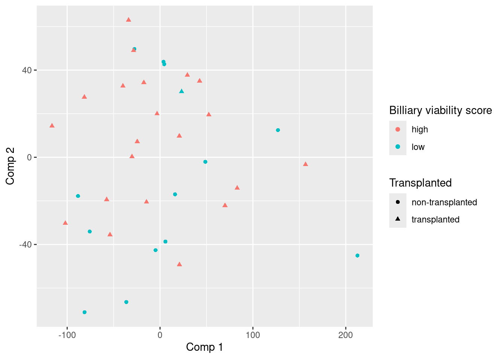
TODO conclusie
plotVariance(model_transcriptomics)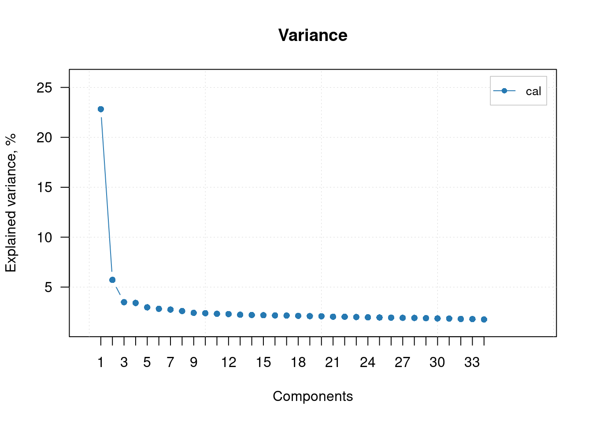
TODO conclusie
loadings_transcriptomics <- model_transcriptomics$loadings
plot(loadings_transcriptomics[,1])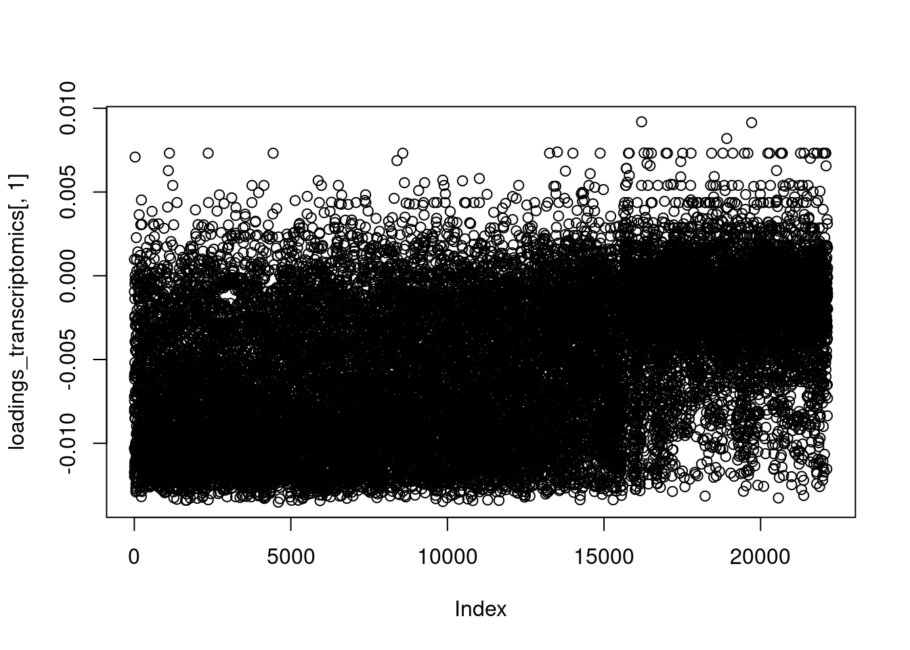
argsort_transscript <- order(loadings_transcriptomics[,1]^2, decreasing = T)
plot(loadings_transcriptomics[,1][argsort_transscript])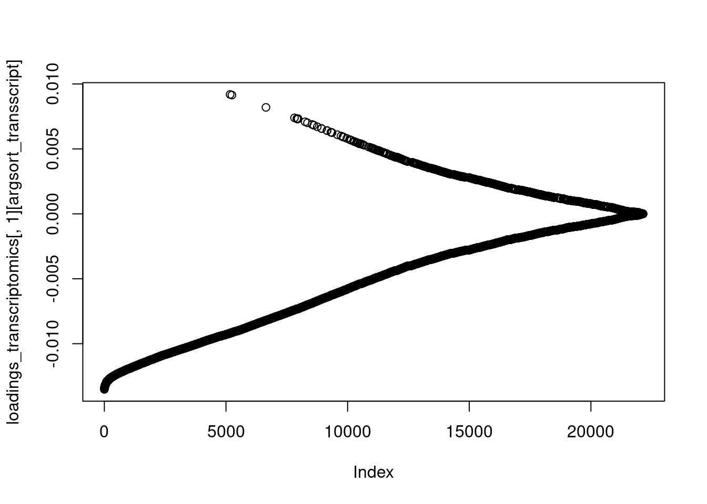
genes_pca1_transcript <- transcriptomics_data[argsort_transscript,2]
head(genes_pca1_transcript)# A tibble: 6 × 1
# Groups: SYMBOL [6]
SYMBOL
<chr>
1 OLFML3
2 NAT2
3 SGCE
4 ACTG2
5 SMCO4
6 CHERP DESEQ2
library(DESeq2)25-05-2025
DESEQ2
Creating coldata
coldata <- transcriptomics_metadata_dups_rem %>%
dplyr::filter(Comment.ENA_RUN. %in% names(count_data_transcript)) %>%
dplyr::select(Comment.ENA_RUN., Characteristics.biliary.viability.score.group.) %>%
tibble::column_to_rownames("Comment.ENA_RUN.")
coldata Characteristics.biliary.viability.score.group.
ERR12161053 low
ERR12161054 high
ERR12161055 low
ERR12161056 high
ERR12161057 low
ERR12161058 low
ERR12161059 high
ERR12161060 low
ERR12161061 low
ERR12161062 high
ERR12161063 high
ERR12161064 low
ERR12161065 low
ERR12161066 high
ERR12161067 high
ERR12161068 low
ERR12161069 high
ERR12161070 high
ERR12161071 high
ERR12161072 low
ERR12161073 high
ERR12161074 high
ERR12161075 high
ERR12161076 low
ERR12161077 high
ERR12161078 high
ERR12161079 high
ERR12161080 high
ERR12161081 low
ERR12161082 low
ERR12161083 high
ERR12161084 low
ERR12161085 high
ERR12161086 high
ERR12161087 highrow.names(transcriptomics_data) <- NULL
count_data_dds <- transcriptomics_data[,c(2,8:ncol(transcriptomics_data))] %>%
tibble::column_to_rownames("SYMBOL")dds <- DESeqDataSetFromMatrix(countData = count_data_dds,
colData = coldata,
design = ~ Characteristics.biliary.viability.score.group.)Warning in DESeqDataSet(se, design = design, ignoreRank): some variables in
design formula are characters, converting to factorsdds <- DESeq(dds)estimating size factorsestimating dispersionsgene-wise dispersion estimatesmean-dispersion relationshipfinal dispersion estimatesfitting model and testing-- replacing outliers and refitting for 99 genes
-- DESeq argument 'minReplicatesForReplace' = 7
-- original counts are preserved in counts(dds)estimating dispersionsfitting model and testingresultsNames(dds)[1] "Intercept"
[2] "Characteristics.biliary.viability.score.group._low_vs_high"res <- results(dds, name = "Characteristics.biliary.viability.score.group._low_vs_high")
reslog2 fold change (MLE): Characteristics.biliary.viability.score.group. low vs high
Wald test p-value: Characteristics.biliary.viability.score.group. low vs high
DataFrame with 35172 rows and 6 columns
baseMean log2FoldChange lfcSE stat pvalue padj
<numeric> <numeric> <numeric> <numeric> <numeric> <numeric>
TSPAN6 221.335722 -0.0365803 0.121265 -0.301657 0.762913 0.998702
TNMD 0.073575 0.7214463 3.027828 0.238272 0.811670 0.998702
DPM1 75.493961 0.1064914 0.106454 1.000355 0.317139 0.998702
SCYL3 16.384121 0.2654426 0.212704 1.247945 0.212051 0.998702
C1orf112 1.934195 -0.9192006 0.695982 -1.320724 0.186593 0.998702
... ... ... ... ... ... ...
LOC124904963 0.2302960 -0.3090353 1.65392 -0.1868505 0.851778 0.998702
LINC02498 0.0000000 NA NA NA NA NA
CENPVL2 0.0000000 NA NA NA NA NA
MGC4859 0.1991999 -0.5151341 1.88200 -0.2737159 0.784303 0.998702
HYMAI 0.0229475 -0.0342436 3.02783 -0.0113096 0.990976 0.998702Nu hebben we de resultaten voor alle genen en de verschillen tussen de hoge en lage viability. Hier kan met een lfcShrink de log fold change geschaald worden
resLFC <- lfcShrink(dds, coef = "Characteristics.biliary.viability.score.group._low_vs_high")
resLFClog2 fold change (MAP): Characteristics.biliary.viability.score.group. low vs high
Wald test p-value: Characteristics.biliary.viability.score.group. low vs high
DataFrame with 35172 rows and 5 columns
baseMean log2FoldChange lfcSE pvalue padj
<numeric> <numeric> <numeric> <numeric> <numeric>
TSPAN6 221.335722 -2.57691e-06 0.00144259 0.762913 0.998702
TNMD 0.073575 3.11193e-07 0.00144269 0.811670 0.998702
DPM1 75.493961 1.21373e-05 0.00144259 0.317139 0.998702
SCYL3 16.384121 6.15541e-06 0.00144267 0.212051 0.998702
C1orf112 1.934195 -1.88261e-06 0.00144269 0.186593 0.998702
... ... ... ... ... ...
LOC124904963 0.2302960 -3.01839e-07 0.00144269 0.851778 0.998702
LINC02498 0.0000000 NA NA NA NA
CENPVL2 0.0000000 NA NA NA NA
MGC4859 0.1991999 -3.65053e-07 0.00144269 0.784303 0.998702
HYMAI 0.0229475 -1.34823e-07 0.00144269 0.990976 0.998702summary(res)
out of 22142 with nonzero total read count
adjusted p-value < 0.1
LFC > 0 (up) : 0, 0%
LFC < 0 (down) : 0, 0%
outliers [1] : 0, 0%
low counts [2] : 1, 0.0045%
(mean count < 0)
[1] see 'cooksCutoff' argument of ?results
[2] see 'independentFiltering' argument of ?resultsplotCounts(dds, gene=which.min(res$padj), intgroup="Characteristics.biliary.viability.score.group.")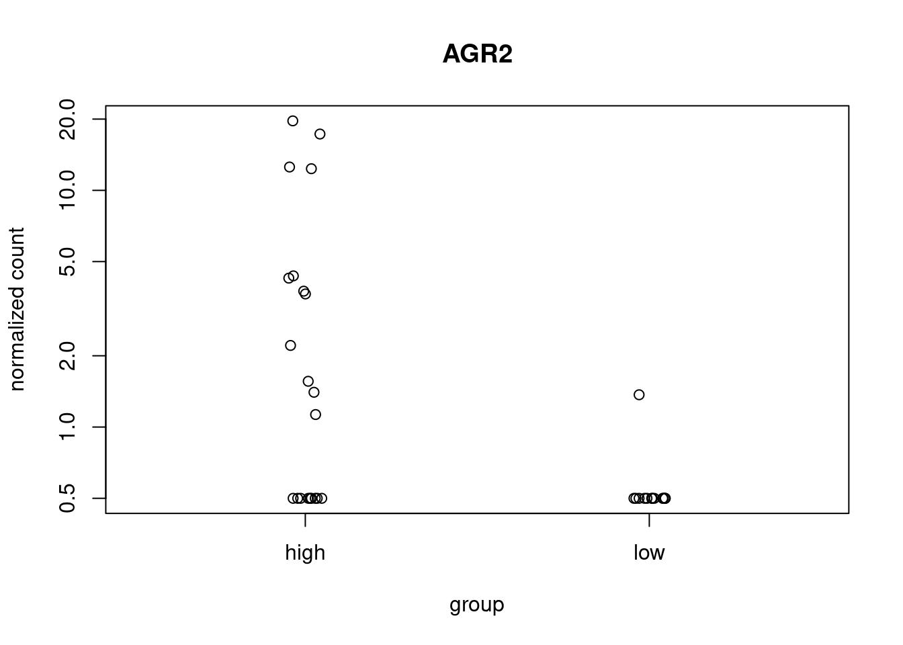
plotMA(res)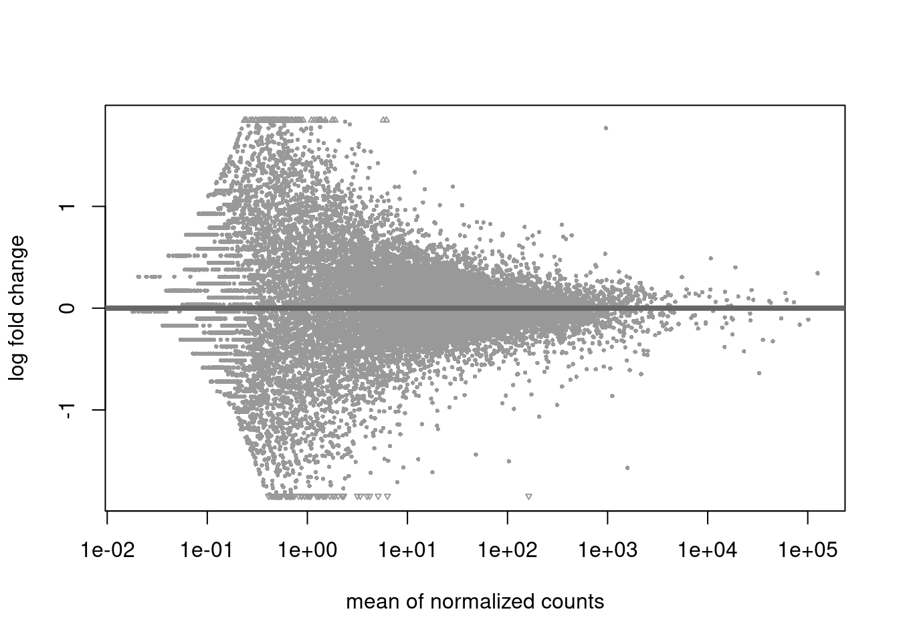